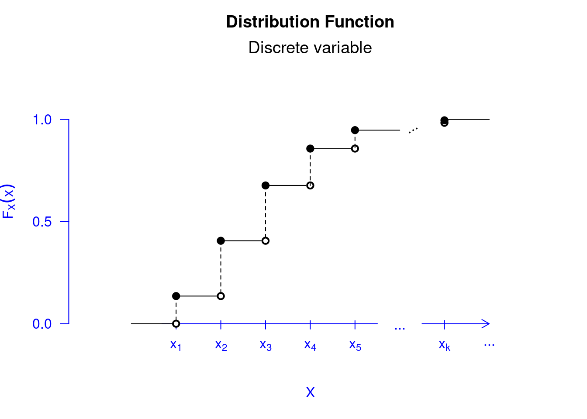
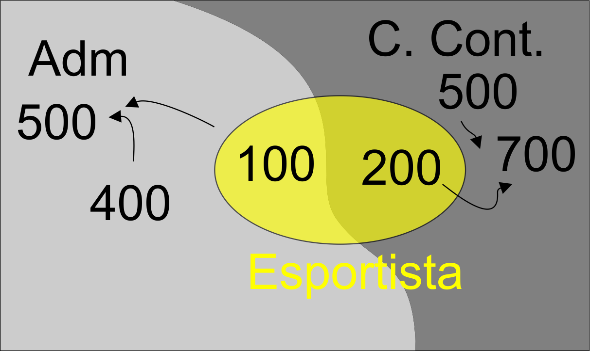
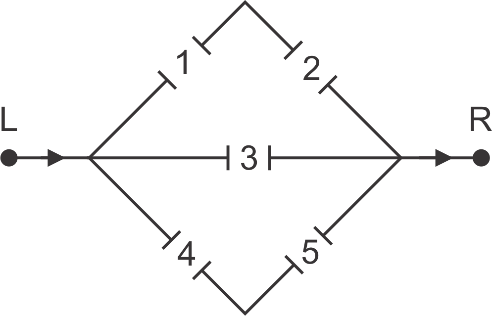

# Anexando o pacote ao caminho de busca
library(leem)
# Funcao de probabilidade
showcdf(prop = NULL)

Após finalizarmos as principais ideias sobre a Estatística Descritiva, Capítulos 1 a 4, iniciamos o assunto de probabilidade, como passos iniciais para a tomada de decisão por meio dos dados. Para isto, usaremos a Estatística Inferencial (Teoria da Estimação e Teoria da decisão), assuntos vistos nos Capítulos 9 e 10. Contudo, é imprescindível uma fundamentação teórica sobre a probabilidade, base para a tomada de decisão.
A probabilidade vem aparecer como ramo da matemática no século XV, embora tenha surgido antes desse período. Entretanto, somente no século XVI, é que a teoria da probabilidade passa a ser estudada com profundidade, quando Jerónimo Cardano (1501-1576) passa a estudar problemas com os jogos de azar: cartas, dados, etc. Os jogadores de cassinos, tentavam encontrar meios de obter chances maiores de, por exemplo, ganhar um jogo, acertar um número ou uma carta. Daí surge a probabilidade para resolver esses problemas por meio dos matemáticos.
Já a estatística inicialmente, tentava identificar determinados problemas do Estado, como o número de nascidos e de mortos, determinação do número de pessoas do sexo masculino e feminino, etc. Entretanto, apenas no início do século XX é que a probabilidade e a estatística passam a ser interligadas, isto é, a estatística agora necessita de técnicas probabilísticas para o estudo de dados.
Hoje, a Estatística tem como um dos objetivos entender características atribuíveis a população de estudo. Com um subconjunto (amostra) da população, a estatística tenta se aproximar dessas características (parâmetros) por meio da inferência, através dos estimadores (características atribuíveis a amostra). Entretanto, se basear numa amostra para entender a população, gera uma incerteza. E essa incerteza é medida por meio da teoria da probabilidade, pela qual toda a estatística é desenvolvida.
Inicialmente, faremos uma revisão sobre Teoria de conjuntos, já usando termos específicos dentro da probabilidade, como por exemplo, a definição de um Experimento aleatório, dentre outras. Isso porque se faz necessário o entendimento sobre o agrupamento de elementos, e a chance com que esses elementos podem ocorrer em um experimento.
Quando desejamos compreender algum fenômeno da natureza, tentamos estudá-lo por meio de um processo de observação chamado experimento. Para isso, definimos um experimento aleatório, Definição 5.1, a seguir.
Vejamos os Exemplos 5.1, 5.2 e 5.3 para exemplificar um experimento aleatório.
Em um contexto aplicado, podemos nos interessar em estudar a resistência de um fio de cobre a uma determinada corrente. Para isso, replicamos diversas vezes esse fenômeno e medimos a resistência. Este é um exemplo do que chamamos de experimento. Para que esse experimento não tenha resultados inconsistentes, usamos muitas vezes um laboratório para tentar controlar outras variáveis que possam perturbar o experimento, isto é, medimos a resistência do fio, de modo que a maior influência dessa variável para o experimento, seja devida a corrente aplicada ao final. Por mais que limitemos as condições externas do experimento, surgem sempre variáveis não controláveis ao sistema que foge do controle do pesquisador nesses casos, que são as variáveis não controláveis, Figura 5.1. Por mais que repliquemos o experimento, em mesmas condições, veremos que a medida da resistência do fio não será igual, devido a essas variáveis não controláveis, e que isso reflete em um componente aleatório, e por consequência, dizemos que estes tipos de experimentos são chamados de experimentos aleatórios.
Baseado, nos exemplos anteriores, percebemos pelo Exemplo 5.1, que não sabemos de fato qual o número da face superior que ocorrerá após o lançamento do dado. Mas sabemos, quais os resultados possíveis, que são: \(1\), \(2\), \(3\), \(4\), \(5\) e \(6\). O conjunto de todos esses resultados, chamaremos de Espaço amostral, apresentado na Definição 5.2, a seguir.
Cada um dos elementos do espaço amostral é representado por \(\omega\). Na Definição 5.5, apresentaremos o significado de evento. Contudo, podemos antecipar como um subconjunto de \(\Omega\). Assim, diremos que um determinado evento ocorrerá se o resultado do experimento estiver nesse evento. Existem duas relações entre eventos que usaremos constantemente ao longo do conteúdo, que são:
E que fique claro, a relação de elemento para conjunto é de pertinência, isto é, \(\omega \in A\). Significa que \(\omega\) é um elemento pertencente (ou membro) de \(A\). A relação entre conjuntos é uma relação de continência, isto é, \(A \subset B\), significando que todo elemento de \(A\) é também elemento de \(B\).
De forma mais abrangente, poderíamos apresentar a relação da equivalência da seguinte forma:
Esta representa difere da situação anterior da seguinte forma:
Retornando a Definição 5.2, podemos apresentar um outro espaço amostral, para o experimento dado no Exemplo 5.4, a seguir.
Contudo, como apresentamos a natureza das variáveis no Capítulo 1, definimos também a natureza dos espaços amostrais de acordo os seus resultados, do qual podemos apresentá-la na Definição 5.3.
Vejamos o Exemplo 5.5, retirado de Montgomery e Runger (2016), para distinguir espaços amostrais discretos e contínuos, apresentado a seguir.
Entretanto, também podemos ter um conjunto qualquer \(A\), que contém parte do elementos de \(\Omega\), isto é, \(A \subset \Omega\), e que \(A\) passa a ser chamado de subconjunto de \(\Omega\), apresentado na Definição 5.4.
Essa definição pode ser aplicada também a subconjuntos de \(\Omega\), como apresentado no Exemplo 5.6, a seguir.
Vejamos o Exemplo 5.7, para um entendimento inicial sobre um evento, apresentado a seguir.
Um outro exemplo abordado em James (2004), pode exemplificar um evento dentro do círculo unitário, apresentado no Exemplo 5.8, a seguir.
Escolher ao acaso um ponto no círculo de raio 1 centrado na origem. Então \[\begin{align*} \Omega & = \textrm{círculo unitário } = \{(x,y) \in \mathbb{R}^2:~ x^2 + y^2 \leq 1\}. \end{align*}\] Vejamos alguns eventos para esse exemplo: \[\begin{align*} A & = \textrm{``distância entre o ponto escolhido e a origem é'' } \leq 1/2 \\ B & = \textrm{``distância entre o ponto escolhido e a origem é'' } \geq 15\\ C & = \textrm{``1ª Coordenada do ponto escolhido é maior que a 2ª}. \end{align*}\] Se \(\omega = (x,y)\) for um resultado do experimento, então \(\omega\) pertencerá a \(A\) se, e somente se, \(x^2 + y^2 \leq 1/4\). Pertencerá ao evento C se, e somente se, \(x > y\). Nenhum ponto \(\omega\) pertencerá a \(B\), como pode ser observado pela Figura 5.2. Logo, temos: \[\begin{align*} A & =\{(x,y) \in \Omega:~ \sqrt{x^2 + y^2} \leq 1/2\}, \\ B & =\emptyset = \textrm{conjunto vazio}, \\ A & =\{(x,y) \in \Omega:~ x > y\}. \\ \end{align*}\] Então, todo evento associado a este experimento pode ser identificado por um subconjunto do espaço amostral.
Diante, do que falamos sobre a definição de evento, podemos apresentar três eventos básicos: o evento certo, impossível e o elementar, apresentados na Definição 5.6, a seguir.
Uma outra forma de definir o evento impossível é representá-lo como um conjunto vazio, apresentado na Definição 5.7, a seguir.
Podemos perceber que todo conjunto vazio é um subconjunto de qualquer evento não vazio do espaço amostral, como pode ser apresentado no Teorema 5.1.
E ainda podemos concluir que se existe um conjunto vazio, ele é único, como pode ser apresentado no Corolário 5.1.
Em algumas situações, podemos apresentar alguns eventos a partir da combinação de outros eventos. Dessa forma, se faz necessário apresentar algumas operações elementares de conjuntos e suas consequências, tais como a união, interseção, complemento, dentre outras definições abordadas a seguir. Inicialmente, apresentamos na Definição 5.8, a união de dois eventos.
Vejamos o Exemplo 5.9, sobre a união de dois eventos, a seguir.
A Definição 5.9 apresenta a próxima propriedade de conjuntos, que é a interseção de de eventos, apresentada a seguir.
Do Exemplo 5.9, temos que a intersecção de \(AB = \{3\}\).
Vejamos o Exemplo 5.10, para entendermos sobre eventos disjuntos, apresentado a seguir.
Em seguida, apresentamos mais duas definições interessantes, que são os eventos coletivamente exaustivos (Definição 5.11) e eventos equivalentes (Definição 5.12), apresentados na sequência.
Na sequência, segue a definição sobre eventos equivalentes.
Uma relação de eventos que será muito importante para o estudo da teoria da probabilidade, é a definição de complemento, abordado a seguir.
A Definição 5.14 pode ser confundida com a Definição 5.13, porém esta última se remete ao espaço amostral, e a diferença entre dois eventos se refere apenas a existência dos elementos de um evento que não estão em outro evento. Vejamos o Exemplo 5.13, e depois compare com o Exemplo 5.12, para elucidar essas duas definições.
Por fim, uma última definição é a partição de conjuntos, apresentado na Definição 5.15, a seguir.
Considerando uma sequência de eventos \(\{A_i\}_{i = 1}^{n}\)1, não vazios, é uma partição do evento \(A\), se e somente se,
Considerando que \(A = \Omega\), dizemos que temos uma . A seguir, apresentamos algumas leis importantes para a teoria de conjuntos, que estabelece algumas propriedades. Vejamos o Teorema 5.2.
Considere três eventos \(A\), \(B\), e \(C\) definidos em \(\Omega\), então segue que:
Para provar que dois conjuntos são iguais, devemos demonstrar que todo elemento que está em um conjunto, também está no outro, e vice-versa.
Para finalizar, apresentamos pelo Teorema 5.3, algumas identidades que serão importantes na teoria de conjuntos para o estudo sobre a probabildade.
Sejam os eventos \(A\) e \(B\) definidos no espaço amostral \(\Omega\), não vazio. Então, apresentamos as seguintes identidades:
Para provar que dois conjuntos são iguais, devemos demonstrar que todo elemento que está em um conjunto, também está no outro, e vice-versa.

Vamos apresentar a prova por contradição. Supomos que \(\Omega^c \neq \emptyset\). Isso significa que \(\exists \omega: \omega \in \Omega^c \textrm{ e } \omega \notin \Omega\), e isso é absurdo, pois \(\Omega\) representa o conjunto de todos os resultados possíveis em um experimento. Logo, \(\Omega^c = \emptyset\);
Vamos provar por contradição. Supomos que \(\emptyset^c \neq \Omega\). Isso implica que, \(\exists \omega: \omega \in \Omega \textrm{ e }\omega \notin \emptyset^c\). Então, isso implica que \(\omega \in \emptyset\), que é absurdo. Logo, \(\emptyset^c = \Omega\). Uma outra forma de apresentar essa prova é usar a definição de evento complementar, isto é, \(A^c = \Omega - A\). Considerando \(A = \emptyset\), então \(\emptyset^c = \Omega - \emptyset\). Logo, \(\emptyset^c = \Omega\);
\(\omega \in (A^c)^c \Leftrightarrow \omega \notin A^c \Leftrightarrow \omega \in A\);
\(\omega \in A \cap \Omega \Leftrightarrow \omega \in A \textrm{ e } \omega \in \Omega \Leftrightarrow \omega \in A\), como pode ser observado pelo diagrama a seguir.

Vamos apresentar a prova por contradição, isto é, vamos supor que \(A \cap \emptyset \neq \emptyset\), então \(\exists\omega: \omega \in A \cap \emptyset\). Assim, \(\omega \in A\) e \(\omega \in \emptyset\). Porém, \(\omega \in \emptyset\) é falso. Então \(\omega \in A \cap \emptyset\) é falso. Logo, \(A \cap \emptyset = \emptyset\);
Considerando que \(\omega \in A \cup \emptyset\), então ou \(\omega \in A\) ou \(\omega \in \emptyset\). Mas \(\omega \in \emptyset\) é falso, logo \(\omega \in A\). Do mesmo modo se \(\omega \in A\), então \(\omega \in A \cup \emptyset\);
\(\omega \in (A - B)\) \(\Leftrightarrow\) \(\omega \in\) \(A\) \(\textrm{ e }\) \(\omega\notin B\) \(\Leftrightarrow\) \(\omega \in A \textrm{ e } \omega \notin (A \cap B) \Leftrightarrow A - (A \cap B)\). Da mesma forma, \(\omega \in (A - B)\) \(\Leftrightarrow\) \(\omega \in A\) \(\textrm{ e }\) \(\omega \notin B \Leftrightarrow \omega \in A \textrm{ e } \omega \in B^c \Leftrightarrow \omega \in A \cap B^c\). Vejamos o diagrama a seguir.
Baseado em tudo o que foi estudado sobre uma introdução à teoria de conjuntos, iremos a partir da próxima seção, contextualizar todas essas informações com o estudo sobre a medida de probabilidade.
Após um contexto sobre a teoria de conjuntos, iniciamos o contexto probabilístico, com o interesse de saber a chance de determinado elemento de um evento ocorrer como resultado de um experimento, ao invés de estar interessado nesse resultado. Isso tem total importância prática, pois é dessa forma, por exemplo, que prevemos determinados resultados de um fenômeno de interesse. Consideremos um evento \(A\) contido no espaço amostral \(\Omega\), e desejamos associar ao evento \(A\) uma medida que assume valores entre 0 e 1, que chamamos de medida de probabilidade de \(A\), denotada por \(P(A)\). Assim, diremos que \(P(A)\) é a probabilidade de que o evento \(A\) ocorra no espaço amostral \(\Omega\). De outro modo, a probabilidade do evento \(A\) representa a chance de ao menos um de seus elementos ocorrerem como resultado de um experimento. Voltando ao Exemplo 5.1, considerando que esse dado é equilibrado, e o evento \(A\subset \Omega\), então poderemos atribuir uma probabilidade para \(A\) da seguinte forma: \[\begin{align*} P(A) & = \frac{\#A}{6} = \frac{\textrm{número de resultados favoráveis a }A}{\textrm{número de resultados possíveis}}. \end{align*}\]
Esta é a definição clássica de probabilidade quando \(\Omega\) é finito. Entretanto, a probabilidade que o evento \(A\) ocorra no espaço amostral nem sempre é possível, devido a complexidade desses eventos. Retornando ao Exemplo 5.8, podemos interpretar a probabilidade de \(A\subset \Omega\) como: \[\begin{align*} P(A) & = \frac{\textrm{área } A}{\textrm{área }\Omega} = \frac{\textrm{área } A}{\pi}, \end{align*}\] sendo a área de \(A\) bem definida. Segundo um teorema profundo da teoria da medida, não se pode definir \(P(A)\) para \(A \subset \Omega\) de modo que a área de \(A\) não esteja bem definida. A prova disso depende do Axioma da escolha. Um exemplo clássico desses eventos são os conjuntos de Vitali de \(\mathbb{R}\), os quais não podemos atribuir nenhuma medida quando ela generaliza o comprimento de intervalos de \(\mathbb{R}\). De fato é impossível atribuir comprimento a todos subconjuntos de \(\mathbb{R}\) preservando a aditividade e invariância por translação.
Dessa forma, estaremos apenas interessados em eventos cuja área esteja bem definida, apresentada na Definição 5.16, a seguir.
Definimos a medida de probabilidade apresentada na Definição 5.17, a seguir.
Seja \(\Omega\) o espaço amostral, então uma função \(P\), tal que \(P:\Omega \to \mathbb{R}\), é chamada de medida de probabilidade ou probabilidade, aos eventos do espaço amostral satisfazendo os seguintes axiomas de Kolmogorov:
Assim como mencionado por Montgomery e Runger (2016), os axiomas não determinam probabilidades, mas capacitam a calcular facilmente as probabilidade de alguns eventos, a partir do conhecimento de outras probabilidades. Na realidade, a probabilidade se baseia no conhecimento do sistema em estudo.
Poderíamos ampliar o Axioma} [\(iii\)], Definição 5.17, da seguinte forma:
Axioma [iii\(^*\)]. (Aditividade finita). Se \(\{A_i\}_{i = 1}^{n}\) é uma sequência disjunta dois a dois de eventos em \(\Omega\), então \(P\left(\bigcup_{i = 1}^nA_i\right)=\sum^{n}_{ i = 1} P(A_i)\).}
Para isso, basta considerarmos \(A_2 = \bigcup_{i = 1}^{n-1}A_i\). Para \(n \to \infty\), podemos generalizar esse Axioma da seguinte forma:
Axioma [iii\(^{**}\)]. (\(\sigma\)-Aditividade). Se \(\{A_i\}_{i \geq 1}\)2 é uma sequência disjunta dois a dois em \(\Omega\), então \(P\left(\bigcup_{i = 1}^\infty A_i\right)=\sum^{\infty}_{ i = 1} P(A_i)\).}
Podemos verificar que o Axioma [iii\(^{**}\)] implica nos Axioma [iii\(^{*}\)] e [iii], apresentado no Teorema 5.4.
\[\begin{align*} P(\Omega) = P(\Omega \cup \emptyset \cup \emptyset \cup \ldots ) = P(\Omega) + P(\emptyset) + P(\emptyset) + \ldots. \end{align*}\]
Definimos \(A_i = \emptyset\), para \(i = n + 1, n + 2, \ldots\). Como \(A_1, A_2, \ldots\) são disjuntos, então
\[\begin{align*} P\left(\bigcup^{n}_{i = 1}A_i\right)& = P\left(\bigcup^{\infty}_{i = 1}A_k\right)\\ & = \sum^{\infty}_{i = 1}P(A_i)\\ & = \sum^{n}_{i = 1}P(A_i) + P(\emptyset) + P(\emptyset) + \ldots\\ & = \sum^{n}_{i = 1}P(A_i), \end{align*}\] o que conclui a prova.
Um quarto Axioma, pode ser complementado sobre a medida de probabilidade James (2004), que segue:
Axioma [iv]. (Continuidade do vazio). Se a sequência \(\{A_i\}_{i \geq 1}\), em que \(A_i \subset \Omega ~\forall i \in \mathbb{N}^{+}\), decrescer para o vazio, então \(\lim\limits_{i \to \infty}P(A_i) \to 0\).
Este axioma indica que se \(\{A_i\}_{i \geq 1}\) decrescer para o vazio, isto é \(A_i \downarrow \emptyset\), significa que \(A_i \supset A_{i + 1}~\forall i\in \mathbb{N}^{+}\), ou seja, \(\{A_i\}_{i \geq 1}\) decresce, e \(\bigcap_{i \geq 1}A_i = \emptyset\).
\[\begin{align*} A_1 = (A_1 - A_2) \cup (A_2 - A_3) \cup \ldots = \bigcup_{i = 1}^{\infty}(A_i - A_{i + 1}), \end{align*}\] pelo diagrama:
As regiões \(A_i - A_{i + 1}\) são disjuntas, uma vez que a sequência é decrescente. Considere também que \(\Omega\) é fechado para diferenças. Pelo Axioma [iii\(^*\)], temos
\[\begin{align*} P(A_1) & = P\left(\bigcup^{\infty}_{i = 1}(A_i - A_{i + 1})\right) = \sum_{i = 1}^{\infty} P(A_i - A_{i + 1}), \end{align*}\] portanto a série é convergente e \[\begin{align*} \sum_{i = 1}^{\infty} P(A_i - A_{i + 1}) & = \sum_{i = 1}^{n - 1} P(A_i - A_{i + 1}) + P(\emptyset) + P(\emptyset) + P(\emptyset) + \ldots\\ & = \sum_{i = 1}^{n - 1} P(A_i - A_{i + 1}) \stackrel[n \to \infty]{}{\to} P(A_1). \end{align*}\] Pela aditividade finita, \[\begin{align*} P(A_i - A_{i + 1}) & = P(A_i) - P(A_{i + 1}), \end{align*}\] e portanto, \[\begin{align*} P(A_1) & = \lim\limits_{n \to \infty}\sum_{i = 1}^{n - 1}[P(A_i) - P(A_{i + 1})]\\ & = \lim\limits_{n \to \infty}\left\{[P(A_1) - P(A_2)] + [P(A_2) - P(A_3)] + \ldots \right. \\ & \quad \left. \ldots + [P(A_{n-1}) - P(A_n)]\right\}\\ & = \lim\limits_{n \to \infty}\left[P(A_1) - \centernot{\color{red}{P(A_2)}} + \centernot{\color{red}{P(A_2)}} - \centernot{\color{red}{P(A_3)}} + \ldots \right.\\ & \quad \left. \ldots + \centernot{\color{red}{P(A_{n-1})}} - P(A_n)\right]\\ & = \lim\limits_{n\to \infty} [P(A_1) - P(A_n)], \end{align*}\] Logo, \(P(A_n) \to 0\).
\[\begin{align*} A & = \left(\bigcup_{i = 1}^{n}A_i \right)\cup \left(\bigcup_{i = n + 1}^{\infty}A_i \right) \end{align*}\] e como a \(\sigma\)-aditividade implica em aditividade finita, Teorema 5.4, temos que \[\begin{align*} P(A) & = \sum_{i = 1}^{n}P(A_i) + P\left(\bigcup_{i = n + 1}^{\infty}A_i \right). \end{align*}\] Seja \(B_n = \bigcup_{i = n + 1}^{\infty}A_i\), então \(B_n\downarrow \emptyset\) e portanto \(P(B_n) \to 0\) (Pelo Axioma [iv]). Logo, \[\begin{align*} \sum_{i = 1}^{n}P(A_i)& \stackrel[n \to \infty]{\rightarrow}{}P(A), \end{align*}\] isto é, \(P(A) = \sum_{i = 1}^{\infty}P(A_k)\), como queríamos demonstrar.
Por fim, o Corolário 5.2 apresenta as relações entre os Axiomas apresentados sobre a medida de probabilidade, a seguir.
Os dois seguintes sistemas de axiomas são equivalentes:
| Sistema I: | Axiomas [i], [ii], [iii\(^{**}\)], |
| Sistema II: | Axiomas [i], [ii], [iii\(^{*}\)] e [iv]. |
Vejamos o Exemplo 5.14, para elucidar a definição de probabilidade, a seguir.
Nesse caso, (a) o espaço amostral é \(\Omega = \{1, 2, 3, 4, 5, 6, 7, 8\}\). Como a peça moldada de injeção é igualmente provável, então (b) a probabilidade de a peça ser proveniente da cavidade 1 ou 2, é dada por: \[\begin{align*} P(\{1\} \cup \{2\}) & = P(\{1\}) + P(\{2\}), \quad \textrm{(Eventos disjuntos)}\\ & = 1 / 8 + 1 / 8\\ & = 2 / 8. \end{align*}\] Por fim, (c) a probabilidade de a peça não ser proveniente nem da cavidade 3 nem da 4, é dada por: \[\begin{align*} P(\{3\}^c \cap \{4\}^c) & = P[(\{3\} \cup \{4\})^c], \quad \textrm{(Lei DeMorgan}\\ & = 1 - P(\{3\} \cup \{4\}), \quad \textrm{(Evento complementar)}\\ & = 1 - [P(\{3\}) + P( \{4\})], \quad \textrm{(Eventos disjuntos)}\\ & = 1 - [1 / 8 + 1 /8]\\ & = 1 - 2 /8\\ & = 6 / 8. \end{align*}\]
O ítem (c) do Exemplo 5.14 exigiria um conhecimento sobre algumas propriedades da medida de probabilidade como consequência das propriedades da teoria de conjuntos abordadas na seção anterior, mas que serão abordadas a seguir.
Apesar da definição formal sobre a probabilidade, há duas formas para atribuir probabilidades aos elementos do espaço amostral, que em algumas situações são aplicáveis, que seguem:
Vejamos algumas propriedades da medida de probabilidade, consequências dos Teoremas 5.2 e 5.3, a seguir.
Seja \(P\) uma medida de probabilidade associada a sequênia de eventos aleatórios \(A_i \in \Omega\), \(\forall i \in \mathbb{N}\). Então são válidas as seguintes propriedades:
\[\begin{eqnarray*} P(A\cup A^c)&=&P(A)+P(A^c)\\ 1 &=& P(A)+P(A^c)\\ P(A) &=& 1 - P(A^c); \end{eqnarray*}\]
Sabemos que \(\Omega\) e \(\emptyset\) são eventos disjuntos. Assim, \[\begin{eqnarray*} P(\Omega\cup \emptyset)&=&P(\Omega)+P(\emptyset)\\ 1 &=& 1+P(\emptyset)\\ P(\emptyset) &=& 0, \end{eqnarray*}\] o que conclui a prova;
Podemos observar que \(B=\{A\cap B\}\cup \{A^c\cap B\}\), Teorema 5.3 (\(xii\)), e que \(\{A\cap B\}\) e \(\{A^c\cap B\}\) são disjuntos. Portanto,
\[\begin{eqnarray*} P(B) &=& P(\{A\cap B\}\cup \{A^c\cap B\})\\ &=& P(A\cap B) + P(A^c\cap B), \end{eqnarray*}\] como esperado;
Se \(A\subset B\), então \(A\cap B = A\). Usando \((i)\), temos \[\begin{eqnarray*} P(B) & = & P(A\cap B)+P(A^c\cap B) \\ & = & P(A)+P(A^c\cap B) \geq P(A), \end{eqnarray*}\] como queríamos demonstrar.
Observando a seguinte identidade encontrada no Teorema 5.3 (\(XV\)), isto é,
\[\begin{align*} A\cup B = & (A \cap B^c)\cup (A \cap B) \cup (A^c \cap B), \end{align*}\] união de eventos disjuntos, que pode ser observado pelo diagrama de Venn, então \[ \begin{align} P(A\cup B) &= P(A \cap B^c) + P(A \cap B) + P(A^c \cap B). \end{align} \tag{5.6}\]
Por (\(iii\)) sabemos que \(P(A) = P(B\cap A)+P(B^c\cap A)\), assim \[ \begin{align} P(B^c\cap A) = P(A) - P(B\cap A). \end{align} \tag{5.7}\] Ainda, temos que \(P(B) = P(A\cap B)+P(A^c\cap B)\) o que implica \[ \begin{align} P(A^c\cap B) = P(B) - P(A\cap B). \end{align} \tag{5.8}\] Portanto, substituindo (5.7) e (5.8) em (5.6), obtemos \[\begin{eqnarray*} P(A\cup B) &=& P(A) + P(B) - P(A \cap B), \end{eqnarray*}\] o que conclui a prova;
Pela Definição 5.17, usando o Axioma da Não-aditividade, a prova é imediata;
Vamos supor que \(A_i \downarrow A\), isto é, \(A_i \supset A_{i + 1}\) e \(\bigcap\limits_{i \geq 1} A_i = A\). Então \(P(A_i) \geq P(A_{i + 1})\) pelo item (iv), e \((A_i - A) \downarrow \emptyset \Rightarrow P(A_i - A) \to 0\) pela continuidade do vazio. Pela aditividade finita \(P(A_i - A) = P(A_i) - P(A)\), e como \(\{P(A_i)\}_{i\in \mathbb{N}}\) é decrescente, logo \(P(A_i)\downarrow P(A)\). Agora, se \(A_i \uparrow A\), isto é, \(A_i \subset A_{i + 1}\) e \(\bigcup\limits_{i \geq 1} A_i = A\), então \(A^c_i \downarrow A^c\), logo \(P(A^c_i) \downarrow P(A^c) \Rightarrow 1 - P(A_i)\downarrow 1 - P(A)\). Portanto, \(P(A_i)\uparrow P(A)\), como queríamos demonstrar;
Vamos inicialmente criar uma sequência disjunta \(A^*_1,A^*_2,\ldots,\) com a propriedade \(\bigcup^{\infty}_{i=1}A^*_i=\bigcup^{\infty}_{i=1}A_i\). Definimos \[ A^*_1=A_1, \qquad A^*_i=A_i \cap \left(\bigcup^{i-1}_{j=1}A_j\right)^c, \quad i=2,3,\ldots. \] É fácil perceber que \[ P\left(\bigcup^{\infty}_{i=1}A_i\right)= P\left(\bigcup^{\infty}_{i=1}A^*_i\right)=\sum^{\infty}_{i=1} P(A^*_i), \] onde a última igualdade segue, pois \(A^*_i\) são disjuntos. Observemos que pela construção, \(A^*_i\subseteq A_i\), portanto, pela propriedade (\(iv\)), \(P(A^*_i)\leq P(A_i)\), logo \[ \sum^{\infty}_{i=1}P(A^*_i) \leq \sum^{\infty}_{i=1}P(A_i). \] Concluindo a prova, \[\begin{eqnarray*} P\left(\bigcup^{\infty}_{i=1}A_i\right) = \sum^{\infty}_{i=1} P(A^*_i) &\leq& \sum^{\infty}_{i=1}P(A_i); \end{eqnarray*}\]
Assumindo que \(A_{n+i} = \emptyset\) para todo \(i = 1, 2, \ldots\), então a propriedade (\(vii\)) implica na propriedade (\(viii\)), o que conclui a prova.
Pela Lei DeMorgan, Teorema 5.2 (\(iv\)), podemos generalizar a equivalência: \((\cap^{n}_{i = 1}A_i)^c = \cup^{n}_{i = 1}A_i^c\), e como consequência temos que \(\cap^{n}_{i = 1}A_i = (\cup^{n}_{i = 1}A_i^c)^c\) (Teorema 5.3, \(v\)). Ainda pelo Teorema 5.3 (\(ii\)), \(\Omega = (\cup^{n}_{i = 1}A_i^c) \cup (\cup^{n}_{i = 1}A_i^c)^c\). Portanto, podemos afirmar que \[ \begin{align} P(\Omega) & = P(\cup^{n}_{i = 1}A_i^c) + (\cup^{n}_{i = 1}A_i^c)^c \quad \textrm{(eventos disjuntos)} \nonumber\\ 1 & = P(\cup^{n}_{i = 1}A_i^c) + (\cup^{n}_{i = 1}A_i^c)^c. \quad \textrm{(Def. 5.17, axioma $i$)} \end{align} \tag{5.9}\] Logo, pela expressão (5.9) e as equivalências apresentadas anteriormente, temos que \[ \begin{align} P(\cap^{n}_{i = 1}A_i) = 1 - P(\cup^{n}_{i = 1}A_i^c). \end{align} \tag{5.10}\] Pela subaditividade, propriedade (\(viii\)), observamos que \[ \begin{align} P(\cup^{n}_{i=1}A_i^c)\leq \sum^{n}_{i=1}P(A_i^c). \end{align} \tag{5.11}\] Portanto, substituindo (5.10) em (5.11), temos \[\begin{align*} 1- P(\cap_{i = 1}^{n}A_i) & \leq \sum_{i = 1}^{n}P(A_i^c)\\ -P(\cap_{i = 1}^{n}A_i) & \leq - 1 + \sum_{i = 1}^{n}P(A_i^c) \quad \times (-1)\\ P(\cap_{i = 1}^{n}A_i) & \geq 1 - \sum_{i = 1}^{n}P(A_i^c),\\ \end{align*}\] o que se conclui a prova;
Vamos apresentar duas provas:
Primeira demonstração
Primeiro para \(n = 2\), temos a propriedade \((iv)\) do Teorema 5.6, isto é, \[ \begin{align} P(A_1 \cup A_2) & = P(A_1)+P(A_2) - P(A_1\cap A_2) \end{align} \tag{5.12}\]
Para \(n = 3\), vamos considerar \(A = \{A_1 \cup A_2\}\), e que \[ \begin{align} P(A_1 \cup A_2 \cup A_3) & = P(A \cup A_3) \nonumber\\ & = P(A) + P(A_3) - P(A \cap A_3). \end{align} \tag{5.13}\]
Segue que \(P(A) = P(A_1 \cup A_2) = P(A_1)+P(A_2) - P(A_1\cap A_2)\) e que \[ \begin{align} P(A \cap A_3) & = P[(A_1 \cup A_2) \cap A_3] \nonumber\\ & = P[(A_1 \cap A_3) \cup (A_2 \cap A_3)] \nonumber\\ & = P(A_1 \cap A_3) + P(A_2 \cap A_3)\\ & \quad - P(A_1 \cap A_2 \cap A_3) \nonumber \end{align} \tag{5.14}\]
Substituindo as expressões (5.45) e (5.14) em (5.39), logo \[\begin{align*} P(A_1 \cup A_2 \cup A_3) & = P(A_1)+ P(A_2) + P(A_3) - P(A_1\cap A_2)\\ & \quad - P(A_1 \cap A_3) - P(A_2 \cap A_3)\\ & \quad + P(A_1 \cap A_2 \cap A_3). \end{align*}\]
Observe que a última expressão para a união das probabilidades alterna o sinal à medida que \(n\) aumenta, isto é, quando \(n\) é par, a interseção de todos os eventos é subtraída. Quando \(n\) é ímpar, a interseção de todos os eventos é somada. Assim, para um \(n\) qualquer induzindo pela expressão (5.16), temos
\[\begin{align*} P\left(\bigcup_{i = 1}^{n}A_i\right) & = \sum_{i = 1}^{n}P(A_i) - \sum_{1 \leq i < j}^{n}P(A_i \cap A_j) + \nonumber\\ & \quad + \sum_{1 \leq i < j < k}^{n}P(A_i \cap A_j \cap A_k) - \ldots\nonumber\\ & \quad \ldots +(-1)^{n + 1}P(\cap_{i = 1}^{n} A_i). \end{align*}\]
Segunda demonstração
Para uma segunda demonstração, vamos provar para \(n - 1\) eventos e induzir para \(n\). Considere a probabilidade da união de eventos \(\{A_i\}_{i = 1}^{n}\), isto é, \[ \begin{align} P\left(\bigcup_{i = 1}^{n}A_i\right) & = P\left( \bigcup_{i = 1}^{n-1}A_i \cup A_n\right)\nonumber\\ & = P\left( \bigcup_{i = 1}^{n-1}A_i \right) + P\left(A_n\right) - P\left( \bigcup_{i = 1}^{n-1}A_i \cap A_n\right) \nonumber\\ & = \left[\sum_{i = 1}^{n-1}P(A_i) - \sum_{1 \leq i < j}^{n-1}P(A_i \cap A_j)+\right. \nonumber\\ & \quad +\left.\sum_{1 \leq i < j < k}^{n-1}P(A_i \cap A_j \cap A_k) - \ldots\right.\nonumber\\ & \quad \left.\ldots + (-1)^{(n - 1) + 1}P\left(\cap_{i =1}^{n-1}A_i\right)\right]+ \nonumber\\ & \quad +P\left(A_n\right) - P\left( \bigcup_{i = 1}^{n-1}A_i \cap A_n\right). \end{align} \tag{5.17}\] Observe que \[ \begin{align} P\left( \bigcup_{i = 1}^{n-1}A_i \cap A_n\right) & = \sum_{i = 1}^{n-1}P(A_i\cap A_n) - \sum_{1 \leq i<j}^{n-1}P[(A_i\cap A_n)\cap (A_j\cap A_n)] +\nonumber\\ & \quad \ldots + (-1)^{(n-1) + 1}P\left(\bigcap_{i = 1}^{n-1}(A_i\cap A_n)\right) \nonumber\\ & = \sum_{i = 1}^{n-1}P(A_i\cap A_n) - \sum_{1 \leq i<j}^{n-1}P(A_i\cap A_j \cap A_n) + \ldots \nonumber \\ & \quad +(-1)^{n-1}\sum_{1 \leq i_1 < \ldots < i_{n-2}}^{n-1}P(\cap^{n-2}_{j = 1} A_{i_{j}}\cap A_n)+\nonumber\\ & \quad + (-1)^{(n-1) + 1}P\left(\cap_{i = 1}^{n}A_i\right). \end{align} \tag{5.18}\] Então, a expressão \(P\left( \bigcup_{i = 1}^{n-1}A_i \cap A_n\right)\) recebe o sinal negativo, e portanto iremos substituir (5.18) em (5.32), levando em consideração a substituição do sinal, que segue \[ \begin{align} P\left(\bigcup_{i = 1}^{n}A_i\right) & = \left[\sum_{i = 1}^{n-1}P(A_i) - \sum_{1 \leq i < j}^{n-1}P(A_i \cap A_j) + \sum_{1 \leq i < j < k}^{n-1}P(A_i \cap A_j \cap A_k) - \ldots\right.\nonumber\\ & \quad \left. \ldots + (-1)^{(n - 1) + 1}P\left(\cap_{i =1}^{n-1}A_i\right)\right]+ P\left(A_n\right) - \left[\sum_{i = 1}^{n-1}P(A_i\cap A_n) - \right. \nonumber\\ & \quad \left. - \sum_{1 \leq i<j}^{n-1}P(A_i\cap A_j \cap A_n) + \ldots + (-1)^{n-1}\times \right. \nonumber\\ & \quad \left. \times \sum_{1 \leq i_1 < \ldots < i_{n-2}}^{n-1}P(\cap^{n-2}_{j = 1} A_{i_{j}}\cap A_n) + (-1)^{(n-1) + 1}P\left(\cap_{i = 1}^{n}A_i\right) \right] \nonumber\\ & = \sum_{i = 1}^{n-1}P(A_i) + P\left(A_n\right) - \sum_{1 \leq i < j}^{n-1}P(A_i \cap A_j) - \sum_{i = 1}^{n-1}P(A_i\cap A_n) + \nonumber\\ & \quad + \sum_{i < j < k}^{n-1}P(A_i \cap A_j \cap A_k) +\sum_{1 \leq i<j}^{n-1}P(A_i\cap A_j \cap A_n) + \ldots\nonumber\\ & \quad \ldots + (-1)^{n-1}\sum_{1 \leq i_1 < \ldots < i_{n-2}}^{n-1}P(\cap^{n-2}_{j = 1} A_{i_{j}}\cap A_n) +\nonumber\\ & \quad \ldots + (-1)^{(n - 1) + 1}P\left(\cap_{i =1}^{n-1}A_i\right) + (-1)^{(n-1) + 1}P\left(\cap_{i = 1}^{n}A_i\right) \end{align} \tag{5.19}\]
Nesse momento, precisamos verificar algumas equivalências:
\[ \begin{align} \sum_{i = 1}^{n-1}P(A_i) + P\left(A_n\right) & = P(A_1) + \ldots + P(A_{n-1}) + P(A_n) \nonumber\\ & = \sum_{i = 1}^{n}P(A_i). \end{align} \tag{5.20}\]
Segunda equivalência: \[ \begin{align} \sum_{1 \leq i < j}^{n-1}P(A_i \cap A_j) + \sum_{i = 1}^{n-1}P(A_i\cap A_n) & = \left[P(A_1 \cap A_2) + \ldots + P(A_1 \cap A_{n-1}) +\right. \nonumber\\ & \quad + P(A_2 \cap A_3) + \ldots + P(A_2 \cap A_{n-1}) + \ldots \nonumber\\ & \quad \left. \quad + P(A_{n-2}\cap A_{n-1})\right] + \left[ P(A_1 \cap A_n) + \right. \nonumber\\ & \quad \left. + P(A_2 \cap A_n) + \ldots + P(A_{n-1} \cap A_{n}) + \right] \nonumber\\ & = \sum_{1 \leq i < j}^{n}P(A_i \cap A_j). \end{align} \tag{5.21}\]
Terceira equivalência:
\[ \begin{align} \sum_{i < j < k}^{n-1}P(A_i \cap A_j \cap A_k) +\sum_{1 \leq i<j}^{n-1}P(A_i\cap A_j \cap A_n) & = \sum_{i < j < k}^{n}P(A_i \cap A_j \cap A_k) \end{align} \tag{5.22}\]
Portanto, substituindo as expressões (5.20), (5.21) e (5.22) em (5.19), chegamos ao resultado esperado \[\begin{align*} P(\bigcup_{i = 1}^{n}A_i) & = \sum_{i = 1}^{n}P(A_i) - \sum_{i < j}^{n}P(A_i \cap A_j) + \sum_{i < j < k}^{n}P(A_i \cap A_j \cap A_k) - \ldots \\ & \quad \dots + (-1)^{n + 1}P(\cap_{i = 1}^{n} A_n), \end{align*}\] o que conclui a prova.
Os resultados apresentados no Teorema 5.6 como propriedades da medida de probabilidade, nos auxilia em diversos problemas de uma forma geral, como condições elementares apresentadas nas sete primeiras propriedades, condições limitantes nas propriedades de (\(viii\)) a (\(x\)), e a condição de união de uma sequência de eventos. Esta última necessitação de um exemplo teórico mais simples para a sua elucidação, apresentada no Exemplo 5.17.
Após termos apresentado nas propriedades da probabilidade, Teorema 5.6 (\(xi\)), a propriedade da união de \(n\) eventos, vamos elucidar uma dedução mais simples para \(n = 4\), que segue:
\[ \begin{align} P\left( \bigcup^{4}_{i = 1}A_i\right) & = P\left( \bigcup^{3}_{i = 1}(A_i \cup A_4)\right) \nonumber\\ & = P\left( \bigcup^{3}_{i = 1}A_i\right) + P\left(A_4\right) - P\left( \bigcup^{3}_{i = 1}A_i \cap A_4\right). \end{align} \tag{5.23}\]
Deduzindo os termos individuais em (5.23), temos \[ \begin{align} P\left( \bigcup^{3}_{i = 1}A_i\right) &= \sum_{i = 1}^{3}P(A_i) - \sum_{1 \leq i < j}^{3}P(A_i \cap A_j) + P(\cap_{i = 1}^{3}A_i). \end{align} \tag{5.24}\]
Deduzindo o outro termo, temos
\[ \begin{align} P\left( \bigcup^{3}_{i = 1}A_i \cap A_4\right) &= \sum_{i = 1}^{3}P(A_i \cap A_4) - \sum_{1 \leq i < j}^{3}P(A_i \cap A_j \cap A_4) + P(\cap_{i = 1}^{4}A_i). \end{align} \tag{5.25}\]
Substituindo (5.24) e (5.25) em (5.23), obtemos \[ \begin{align} P\left( \bigcup^{4}_{i = 1}A_i\right) & = \left[\sum_{i = 1}^{3}P(A_i) - \sum_{1 \leq i < j}^{3}P(A_i \cap A_j) + P(\cap_{i = 1}^{3}A_i) \right] + P\left(A_4\right) - \nonumber \\ & \quad - \left[\sum_{i = 1}^{3}P(A_i \cap A_4) - \sum_{1 \leq i < j}^{3}P(A_i \cap A_j \cap A_4) + P(\cap_{i = 1}^{4}A_i) \right] \nonumber \\ & = \sum_{i = 1}^{3}P(A_i) + P\left(A_4\right) - \sum_{1 \leq i < j}^{3}P(A_i \cap A_j) - \sum_{i = 1}^{3}P(A_i \cap A_4) + \nonumber\\ & \quad + P(\cap_{i = 1}^{3}A_i) + \sum_{1 \leq i < j}^{3}P(A_i \cap A_j \cap A_4) - P(\cap_{i = 1}^{4}A_i). \end{align} \tag{5.26}\]
Devemos observar as seguintes equivalências:
\[ \begin{align} \sum_{i = 1}^{3}P(A_i) + P\left(A_4\right) & = P(A_1) + P(A_2) + P(A_3) + P(A_4) \nonumber \\ & = \sum_{i = 1}^{4}P(A_i); \end{align} \tag{5.27}\]
Percebemos ainda no Teorema 5.6 que a propriedade (\(xi\)) é uma generalização da propriedade (\(v\)). Ao passo que a condição de uma sequência de eventos serem disjuntos dois a dois, Definição 5.10, temos \[ \begin{align} P\left(\bigcup^{\infty}_{i = 1}A_i\right) = \sum_{i = 1}^{\infty}P(A_i). \end{align} \tag{5.30}\] Se considerarmos \(A_i = \emptyset\) para todo \(i = n + 1, n + 2, \ldots\), então restringimos a probabilidade de uma soma finita, isto é, \[ \begin{align} P\left(\bigcup^{n}_{i = 1}A_i\right) = \sum_{i = 1}^{n}P(A_i), \end{align} \tag{5.31}\] uma vez que \(P(\emptyset) = 0\) (Teorema 5.6, \(ii\)). Por fim, para a situação de termo apenas dois eventos, o resultado é o Axioma (\(iii\)) da Definição 5.17. Vejamos mais um exemplo, a seguir.
Considere, \[\begin{align*} A & = \{\omega \in \Omega: \omega = \textrm{``lar X que não excede 240kWh em janeiro''}\}, \\ B & = \{\omega \in \Omega: \omega = \textrm{``lar X que não excede 240kWh em julho''}\}.\\ \end{align*}\]
Isso ocorre porque os eventos não são disjuntos, uma vez que os dois eventos consistem no mesmo lar X, em ser selecionado. Assim, usando a propriedade (\(v\)) do Teorema 5.6, podemos obter \(P(A \cap B)\), dado por: \[ \begin{align} P(A\cap B) & = P(A) + P(B) - P(A \cup B) \nonumber\\ & = 0,8 + 0,7 - 0,9 \nonumber\\ & = 0,6. \end{align} \tag{5.32}\] No caso do ítem (b), o evento que representa o lar X de a quantia vitalícia ser excedida em exatamente um dos dois meses por ser representado por: \((A^c \cap B) \cup (A \cap B^c)\), uma vez que,
\[\begin{align*} A^c = \{\omega \in \Omega: \omega = \textrm{``lar X que exceder 240kWh em janeiro''}\}, \\ B^c = \{\omega \in \Omega: \omega = \textrm{``lar X que exceder 240kWh em julho''}\}.\\ \end{align*}\]
Podemos ainda observar pelo Teorema 5.3 (prop. XV), que \(A \cup B = (A^c \cap B)\cup (A \cap B) \cup (A \cap B^c)\), e que cada um dos eventos dentro do parêntese são disjuntos dois a dois, logo, \[\begin{align*} P(A \cup B) & = P[(A^c \cap B)\cup (A \cap B) \cup (A \cap B^c)]\\ & = P[(A^c \cap B) \cup (A \cap B^c)] + P(A \cap B). \end{align*}\] Desse modo, percebemos que \(P[(A^c \cap B) \cup (A \cap B^c)] = P(A \cup B) - P(A \cap B)\), logo, \[\begin{align*} P[(A^c \cap B) \cup (A \cap B^c)] & = 0,9 - 0,6 = 0,3. \end{align*}\]
Nessa seção, iremos apresentar iniciar com uma motivação, por meio do Exemplo 5.20, uma abordagem sobre dois assuntos muito interessantes na probabilidade, que são a independência de eventos e a modificação do espaço amostral, dada uma informação antecipada, e qual a implicância dessas informações para a probabilidade de um evento ocorrer.
Paulo é um jovem empreendedor e quer abrir seu próprio negócio. Ele observou que o mercado de sandálias era lucrativo. Então resolveu abrir uma fábrica de sandálias. Devido a dificuldade financeira, resolveu comprar três máquinas de sandálias usadas. As informações anteriores sobre estas máquinas dadas pelo proprietário foram:
| Máquina | Produto | Total da produção |
|---|---|---|
| M1 & Pantufas | 50% | 1% |
| M2 | Sandálias baixas | 40% |
| M3 | Sandálias de couro | 10% |
Surgiu as seguintes indagações:
Muitas vezes nos deparamos com situações em que antes da realização de algum experimento, temos alguma informação adicional. Queremos saber o quanto que essa informação pode afetar a medida de probabilidade. Assim, apresentamos a Definição 5.18, que define a probabilidade condicional, a seguir.
Baseado no problema de Paulo, denotemos o evento \(D\) as sandálias produzidas com defeitos pela empresa, \(M_1\) o evento que representa as sandálias produzidas pela máquina \(M_1\), \(M_2\) o evento que representa as sandálias produzidas pela máquina \(M_2\) e \(M_3\) o evento que representa as sandálias produzidas pela máquina \(M_3\). Assim, percebemos que a probabilidade do evento \(D\) não pode ser observada facilmente, pois o defeito dos produtos produzidos pelas máquinas está condicionado a cada máquina. Desse modo podemos representar, a probabilidade desses defeitos da seguinte forma: \(P(D|M_1) = 0,01\), \(P(D|M_2) = 0,02\), e \(P(D|M_3) = 0,03\). Essas probabilidades apresentam uma alteração no espaço amostral para cada evento, porque esses resultados mostram a chance de defeito do produto, dado o conhecimento de que máquina foi produzido, é o que chamamos de restrição do espaço amostral.
Essa restrição do espaço amostral, pode nos questionar se de fato a probabilidade condicional, de fato, é uma medida de probabilidade. Para isso, apresentamos o Teorema 5.7, na sequência.
Para verificarmos se \(Q(.)\) é uma medida de probabilidade, devemos assumir que \(Q\) satisfaz os axiomas de Kolmogorov, isto é,
Axioma 1: \[\begin{align*} Q(\Omega) &= \frac{P(\Omega \cap B)}{P(B)}\\ &= \frac{P(B)}{P(B)}\\ &= 1. \end{align*}\]
Axioma 2: como \(P\) é uma medida de probabilidade, então \[ \forall A \in \Omega: \quad Q(A) \geq 0. \]
Axioma 3: Sejam dois eventos \(A_1\) e \(A_2\), disjuntos, então \[\begin{align*} Q(A_1 \cup A_2) &= \frac{P[(A_1 \cup A_2) \cap B]}{P(B)}\\ &= \sum^{2}_{i=1}\frac{P[(A_1 \cap B) \cup (A_2 \cap B)]}{P(B)},~~ \textrm{Teorema 5.2 (III)}\\ &= Q(A_1) + Q(A_2). \end{align*}\] o que conclui a prova.
Como sequência de importantes resultados sobre propriedades da probabilidade, apresentamos o Teorema 5.8, que será importante para resultados muito utilizados na área aplicada, como o Teorema de Bayes, apresentado na sequência.
Antes de falarmos sobre o teorema da lei da probabilidade total, será interessante fazer a definição sobre a partição de \(\Omega\), apresentada na Definição 5.19, a seguir.
Entretanto, para calcular a probabilidade de uma sandália está com defeito, isto é \(P(D)\), independente de qual máquina a produziu, usamos o Teorema 5.9, a seguir.
Retornando ao cálculo da probabilidade \(P(D)\), no Exemplo 5.21 apresentamos como o Teorema 5.9 soluciona esse problema, a seguir.
Nesse momento, surge uma importante definição na Estatística e Probabilidade, que é a independência de eventos, apresentada na Definição 5.20. A ideia da independência é uma característica probabilística, e isto significa, que se dois eventos forem independentes, então a probabilidade de um evento ocorrer não é influenciado pela ocorrência ou não do outro evento. A implicância da pressuposição da independência em problemas práticos na estatística podem ser resolvidos de forma trivial, devido as técnicas probabilísticas serem resolvidas de forma mais facilmente.
Considere o espaço amostral \(\Omega\). Dois eventos \(A\) e \(B\) de \(\Omega\) são independentes se satisfaz ao menos uma das seguintes condições:
É fácil mostrar que (I) implica em (II), (II) implica em (III), e (III) implica em (I).
\((i) \to (ii)\): Se \(P(A\cap B) = P(A)P(B)\), então
\[\begin{align*} P(A|B) = \frac{P(AB)}{P(A)} = \frac{P(A)P(B)}{P(B)} = P(A), \quad \textrm{para } P(B) > 0; \end{align*}\]
\((ii) \to (iii)\): Se \(P(A|B) = P(A)\), então \[\begin{align*} P(B|A) = \frac{P(BA)}{P(A)} = \frac{P(A|B)P(B)}{P(A)} = P(B), \quad \textrm{para } P(A) > 0; \end{align*}\]
\((iii) \to (i)\): Se \(P(B|A) = P(B)\), então \[\begin{align*} P(AB) = P(B|A)P(A) = P(B)P(A), \textrm{para } P(A) > 0. \end{align*}\]
A intuição para independência na Definição 5.20 fica justificada pelo fato de que \(A\) é independente de \(B\) tanto na ocorrência quanto a não ocorrência de \(B\) e isso não muda em nada a probabilidade da ocorrência de \(A\), isto é, \(P(A|B) = P(A)\) e \(P(A|B^c) = P(A)\). Essas duas expressões significam que \[\begin{align*} P(A\cap B) & = P(B)P(A|B) = P(B)P(A)\\ P(A\cap B^c) & = P(B^c)P(A|B^c) = P(B^c)P(A). \end{align*}\]
Entretanto, a independência entre dois eventos não implica em independência coletiva. Vejamos o Exemplo 5.22, a seguir.
Para uma definição mais geral sobre a independência de eventos, apresentamos a Definição 5.21, a seguir.
Paulo poderia indagar, se os eventos \(M_i\) e \(D\) são independentes ou dependentes. Contudo, pela Definição 5.20, temos que \[\begin{align*} P(D|M_i) & \neq P(D) = 0,016 \Rightarrow D \textrm{ e } M_i \textrm{, para } i = 1, 2, 3, \end{align*}\] logo, não são independentes.
Muitos procedimentos ou testes que se baseiam nesse tipo de problema usam como referência a taxa de erro por experimento, que representa a probabilidade de ao menos uma hipótese verdadeira ser rejeitada. Para isso, pensemos em \(n = 10\) comparações (hipóteses) verdadeiras e independentes, \(H_i\), \(i =1, 2, \ldots, 10\). A probabilidade de cada comparação não ser rejeitada é dada por \(P(H_i) = 1 -\alpha\). Ao passo que, a probabilidade de cada hipótese verdadeira ser rejeitada erroneamente, evento \(H_i^c\), é dada por \(P(H_i^c) = \alpha\). Assim, a probabilidade de ao menos uma comparação ser erroneamente rejeitada é dada por: \[ \begin{align} P\left(\bigcup^{10}_{i = 1}H_i^c\right) & = 1 - P\left(\bigcap^{10}_{i = 1}H_i\right). \end{align} \tag{5.36}\] Vamos usar a ideia do evento complementar, isto é, a probabilidade de termos ao menos uma comparação rejeitada erroneamente é o mesmo que calcularmos a probabilidade do espaço amostral (\(\Omega\)) menos a probabilidade de nenhuma comparação ser rejeitada erroneamente, que representa a interseção \(\cap^{10}_{i = 1}H_i\).
Para observarmos que isso é verdade, vamos simplificar para \(n = 2\). Vejamos, \[\begin{align*} P(H_1^c \cup H_2^c) & = P(H_1^c) + P(H_2^c) - P(H_1^c \cap H_2^c) \quad \textrm{(independentes)}\\ &= P(H_1^c) + P(H_2^c) - P(H_1^c)P(H_2^c)\\ &= \alpha + \alpha - \alpha \times \alpha\\ &= 2\alpha - \alpha^2, \end{align*}\] isto é, \[\begin{align*} P(H_1^c \cup H_2^c) & = 1 - P(H_1 \cap H_2) \quad \textrm{(independentes)}\\ &= 1 - P(H_1)P(H_2)\\ &= 1 - (1 - \alpha)(1 - \alpha)\\ &= 1 - (1^2 - 2\alpha + \alpha^2)\\ &= 2\alpha - \alpha^2, \end{align*}\] ou ainda \[\begin{align*} P[(H_1^c \cap H_2)\cup (H_1 \cap H_2^c)\cup (H_1^c \cap H_2^c)] & = P(H_1^c \cap H_2) + P(H_1 \cap H_2^c) + \\ & \quad + P(H_1^c \cap H_2^c)~\textrm{(disj. e indep.)}\\ &= P(H_1^c)P(H_2) + P(H_1)P(H_2^c)\\ & \quad + P(H_1^c) P(H_2^c)\\ &= \alpha(1 - \alpha) + (1 - \alpha)\alpha + \alpha^2\\ &= 2\alpha - \alpha^2. \end{align*}\] Esses resultados foram possíveis porque a condição de independência existente nos eventos também implica em independência nos eventos complementares, Teorema 5.12. Retornando a expressão (5.36), e a condição de independência, obtemos \[\begin{align*} P\left(\bigcup^{10}_{i = 1}H_i^c\right) & = 1 - (1 - \alpha)^{10}. \end{align*}\]
Se considerássemos \(\alpha = 0,05\), a probabilidade do erro tipo I por experimento é de 0,4013, isto é, \(P\left(\cup^{10}_{i = 1}H_i^c\right) = 0,4013\). Fixando \(\alpha = 0,05\) e variando o número de testes, podemos perceber pela Figura 5.3 que a taxa de erro por experimento aumenta rapidamente. Esse é o efeito de multiplicidade, um problemas dos procedimentos de comparações múltiplas. Os testes são desenvolvimentos tentando controlar esse tipo de problema, porque baseado no exemplo anterior para \(n = 10\), a chance de termos ao menos uma decisão errada de rejeitar uma hipótese verdadeira, quando achávamos que era de 0,05 na realidade foi de 0,4013, muito maior.
Não aceitarmos a independência das comparações, podemos usar a desigualdade de Boole, Teorema 5.6 (\(viii\) e \(ix\)), e afirmar que no máximo a taxa de erro por experimento, para \(\alpha = 0,05\) e \(n = 10\), é dada por:
\[\begin{align*} P\left(\bigcup^{10}_{i = 1}H_i^c\right) & \leq \sum_{i = 1}^{10} P(H_i^c)\\ & \leq n \times \alpha\\ & \leq 10 \times 0,05\\ & \leq 0,5, \end{align*}\] que de fato é verdade, pois \(0,4013 < 0,5\). Ou ainda, pela desigualdade de Bonferroni, Teorema 5.6 (\(x\)), dizemos que ao menos a probabilidade de todas as decisões serem corretas, isto é, de não rejeitarmos hipóteses verdadeiras simultaneamente, é ao menos
\[\begin{align*} P\left(\bigcap^{10}_{i = 1}H_i\right) & \geq 1 - \sum_{i = 1}^{10}P(H_i^c)\\ & \geq 1 - 10\times 0,05\\ & \geq 0,5. \end{align*}\]
A grande questão agora é qual a máquina que Paulo deveria substituir com o propósito de aumentar seu lucro na empresa. A ideia será calcular \(P(M_i|D)\), isto é, dado um defeito na sandália qual a probabilidade de vindo da máquina \(i\)? A maior probabilidade será a máquina substituída. Entretanto, ainda não temos ferramenta para resolver essa resposta. Para isso, apresentamos o seguinte Teorema 5.10 a seguir.
Tal é a sua importância, que um dos ramos de estudo da inferência estatística é baseado nesse teorema. O Teorema de Bayes fornece uma atualização do conhecimento já existente \(P(A_k)\), conhecido como “a priori”, por meio da ocorrência do evento \(B\). Essa atualização é a probabilidade “a posteriori” \(P(A_k|B)\).
Com esse resultado, Paulo agora pode tomar uma decisão mais plausível, isto é, dado um defeito numa determinada sandália produzida na fábrica, qual a probabilidade desta ter sido produzida em cada uma das máquinas? \[\begin{align*} P(M_1|D) = \frac{0,01 \times 0,50}{0,016} = 0,3125\\ P(M_2|D) = \frac{0,02 \times 0,40}{0,016} = 0,5000\\ P(M_3|D) = \frac{0,03 \times 0,10}{0,016} = 0,1875\\ \end{align*}\] A tomada de decisão será substituir a máquina \(M_2\). Poderíamos ter tomado uma decisão equivocada se não fosse o teorema de Bayes.
Devemos abrir uma discussão que ocorre muito frequente entre as Definições 5.10 e 5.20, isto é, eventos disjuntos e independência. Nas próprias definições, percebemos a distinção clara entre as características. A primeira se remete a eventos (conjuntos), e a segunda é uma condição probabilística dos eventos. Contudo, em determinados problemas ainda há muita confusão ao tentar resolvê-los. Assim, apresentemos o Teorema 5.11, a seguir.
Caso esses eventos não tenham probabilidade \(0\), a condição \(A \cap B = \emptyset\) implica que estes são dependentes. Vejamos o Exemplo 5.25 adaptado de Morettin (2010), para elucidar essas definições.
| Tipo sanguíneo | A | B | AB | O |
|---|---|---|---|---|
| Probabilidade de ter o tipo especificado | 0,2 | |||
| Probabilidade de não ter o tipo especificado | 0,9 | 0,95 |
Calcular a probabilidade de que:
Vejamos que os tipos sanguíneos são mutuamente exclusivos e formam a partição do espaço amostral, uma vez que não existe outro tipo sanguineo além dos informados e que não há indivíduo com dois tipos sanguíneos. Assim,
Consideremos o evento A, os indivíduos da comunidade especificado do tipo sanguíneo A, tal que, \(A = \{\omega_A \in \Omega: \omega_A \in A\}\); o evento B, os indivíduos da comunidade especificado do tipo sanguíneo B, tal que, \(B = \{\omega_B \in \Omega: \omega_B \in B\}\); o evento \(AB\), os indivíduos da comunidade especificado do tipo sanguíneo AB, tal que, \(AB = \{\omega_{AB} \in \Omega: \omega_{AB} \in AB\}\); o evento \(O\), os indivíduos da comunidade especificado do tipo sanguíneo O, tal que, \(O = \{\omega_O \in \Omega: \omega_O \in O\}\). Desse modo, o espaço amostral é dado por \(\Omega = \{\omega_A, ~\omega_B, ~\omega_{AB}, ~\omega_O\}\), cujos elementos de \(\omega\) devem estar apenas em um dos eventos anteriores, e que a união de todos os elementos desses formam o espaço amostral, logo esses eventos formam uma partição do espaço amostral (Definição 5.19). Observe também que os elementos não são equiprováveis, como mostrado na tabela de probabilidades na própria questão. Assim, \(P(\Omega)\) \(=\) \(P(A)\) \(+\) \(P(B)\) \(+\) \(P(AB)\) \(+\) \(P(O)\) \(\Rightarrow\) \(1\) \(=\) \(0,2000\) \(+\) \(0,1000\) \(+\) \(0,0500\) \(+\) \(P(O)\) \(\Rightarrow\) \(P(O)\) \(=\) \(0,6500\);
Este ítem merece uma atenção. Como os eventos \(A\) e \(B\) são multumente exclusivos, logo \(P(A \cap B) = 0\), e estes não são independentes pois nenhum tem probabilidade 0 (Teorema 5.11), logo \(A\) e \(B\) são eventos dependentes;
Diferentemente do espaço amostral anterior, neste temos uma combinação de 16 possibilidades a cardinalidade de \(\Omega\), uma vez que temos 4 possibilidades para o primeiro indivíduo e mais 4 possibilidades para o segundo indivíduo, isto é, \(\Omega\) \(=\) \(\{(\omega_A, \omega_A)\), \((\omega_A, \omega_B)\), \((\omega_A, \omega_{AB})\), \((\omega_A, \omega_O)\), \((\omega_B, \omega_A)\), \((\omega_B, \omega_B)\), \((\omega_B, \omega_{AB})\), \((\omega_B, \omega_O)\), \((\omega_{AB}, \omega_A)\), \((\omega_{AB}, \omega_B)\), \((\omega_{AB}, \omega_{AB})\), \((\omega_{AB},\) \(\omega_O)\), \((\omega_O, \omega_A)\), \((\omega_O, \omega_{B})\), \((\omega_O, \omega_{AB})\), \((\omega_O, \omega_O)\) \(\}\). Uma vez determinada as probabilidades de especificação em indivíduos diferentes, a probabilidade de especificar o tipo sanguíneo A em um indivíduo da comunidade não interfere em nada na probabilidade de especificar o tipo sanguíneo de um outro indivíduo dessa mesma comunidade (Uma ressalva é válida, no sentido também que estamos desconsiderando indivíduos consanguíneos, isto é, com grau de parentesco). Assim, a probabilidade de especificar o tipo sanguíneo desses dois indivíduos simultaneamente é \(P(A)\times P(B) = 0,2000 \times 0,1000 = 0,0200\). De outro modo, temos que: \[\begin{align*} P(A \cap B) & = P(\{\omega_A, ~\omega_B\})\\ & = P(\underbrace{\omega_A \in A}_{\textrm{Indivíduo I}} \textrm{ e } \underbrace{\omega_B \in B}_{\textrm{Indivíduo II}})\\ & = P(\omega_A \in A) \times P(\omega_B \in B)\\ & = P(A) \times P(B)\\ & = 0,2000 \times 0,0100\\ & = 0,0200; \end{align*}\]
Agora os eventos “não ter o tipo sanguíneo especificado” não implica que os eventos sejam mutuamente exclusivos pelo fato dos eventos “ter o tipo sanguíneo especificado” terem sido disjuntos. Veja, o evento não ter o tipo sanguínio AB e o evento não ter o tipo sanguíneo B, pode existir indivíduos comum a estes dois eventos, por exemplo, um indivíduo do tipo sanguíneo A ou O, e a probabilidade destes não é zero, logo, os eventos não ter o tipo sanguínio AB e não ter o tipo sanguíneo B não são disjuntos. Entretanto, esses eventos são independentes, pois a probabilidade de um evento não influencia na probabilidade do outro. Assim, \[ \begin{align} P[(AB)^c \cup B^c] & = P[(AB)^c] + P(B^c) - P[(AB)^c \cap B^c] \nonumber\\ & = 0,9500 + 0,9000 - P[(AB)^c \cap B^c]. \end{align} \tag{5.38}\]
Vejamos o evento \((AB)^c = A\cup B \cup O\) e o evento \(B^c = A\cup AB \cup O\). A interseção entre estes é \((AB)^c \cap B^c = A\cup O\), em que A e O são disjuntos, assim, \[ \begin{align} P[(AB)^c \cap B^c] & = P(A\cup O) = P(A) + P(O) \nonumber\\ & = 0,20 + 0,65 = 0,85. \end{align} \tag{5.39}\] Substituindo (5.39) em (5.38), segue que \[ \begin{align*} P[(AB)^c \cup B^c] & = 0,95 + 0,90 - 0,85 = 1. \end{align*} \] De outro modo, \[ \begin{align} P[(AB)^c \cup B^c] & = P[(AB \cap B)^c] \quad \textrm{(Lei DeMorgan)}\nonumber\\ & = 1 - P[(AB \cap B)] \quad \textrm{(Evento complementar)} \nonumber\\ & = 1 - 0 \quad \textrm{(Evento disjunto)} \nonumber\\ & = 1. \end{align} \tag{5.40}\] Ao final, temos a tabela completada da seguinte forma:
| Tipo sanguíneo | A | B | AB | O |
|---|---|---|---|---|
| Probabilidade de ter o tipo especificado | 0,20 | 0,10 | 0,05 | 0,65 |
| Probabilidade de não ter o tipo especificado | 0,80 | 0,90 | 0,95 | 0,35 |
Vale a pena discutirmos sobre a independência nessa situação. Quan-do falamos na especificação do tipo sanguínio é fato que um mesmo elemento não pode ser especificado em dois ou mais tipos sanguíneo. Fica claro que os eventos A, AB, B e O, são disjuntos. Agora, será que a probabilidade de especificar, por exemplo, o tipo sanguíneo A, não interfere na probabilidade do tipo sanguíneo B, ou qualquer um outro tipo sanguíneo? Observe que uma vez especificado a probabilidade de um determinado tipo sanguíneo, por exemplo, tipo A, não haverá mais chances de ele ter o tipo sanguíneo B, logo a probabilidade de B ocorrer é 0. Assim, a condição de ter especificado o tipo sanguíneo A alterou a probabilidade de especificar o tipo sanguíneo B. Logo estes eventos são dependentes.
Podemos ainda expressar mais dois teoremas para complementar as afirmações feitas no Exemplo 5.25, e suas implicações em relação aos eventos serem independentes e eventos disjuntos. Inicialmente, apresentamos o Teorema 5.12 como uma implicância da independência de eventos, a seguir.
Podemos ainda expressar mais dois teoremas para complementar as afirmações feitas no Exemplo 5.25, e suas implicações em relação aos eventos serem independentes e eventos disjuntos. Inicialmente, apresentamos o Teorema 5.12 como uma implicância da independência de eventos, a seguir.
Se A e B são eventos independentes, não vazio, definidos em \(\Omega\), então
\[ P(A^c) = P(A^c\cap B) + P(A^c \cap B^c), \tag{5.42}\]
\[ P(B) = P(B\cap A) + P(B \cap A^c), \textrm{ e } \tag{5.43}\]
\[ P(B^c) = P(B^c\cap A) + P(B^c\cap A^c), \tag{5.44}\] e a condição de que \(P(A\cap B) = P(A)P(B)\) (independentes), então usando (5.41) temos \[\begin{align*} P(A\cap B^c) & = P(A) - P(A)P(B)\quad \textrm{(Independência)}\\ & = P(A)[1 - P(B)] = P(A)P(B^c), \end{align*}\] o que prova o ítem (a). Usando (5.43) pelo mesmo raciocínio, provamos o ítem (b). Usando o resultado do ítem (a), já provado, e a condição de independência na expressão (5.44), temos \[\begin{align*} P(A^c \cap B^c) & = P(B^c) - P(B^c)P(A)\\ & = P(B^c)[1 - P(A)] = P(B^c)P(A^c), \end{align*}\] o que prova o ítem (c), concluindo assim, a prova do teorema.
Por fim, o Teorema 5.13 apresenta uma implicância sobre eventos disjuntos, a seguir.
Usando a Lei de Morgan \(A^c\cap B^c = (A\cup B)^c\), logo percebemos pela expressão (5.45) que \(A^c\cap B^c \neq \emptyset\), o que completa a prova.
Em estatística, avaliamos um experimento não pelos eventos em si, mas por uma função definida no espaço amostral, que associa o evento a um número real. Chamamos essa função de variável aleatória, denotada por uma letra maiúscula, \(X\) ou \(X(.)\). Por exemplo, no Exemplo 5.24 verificamos o efeito de multiplicidade de \(n\) comparações, e ao invés de computarmos a probabilidade da taxa de erro tipo I por experimento observando o evento \(\cup^{n}_{i = 1}H_i^c\) , isto é, \(P(\cup^{n}_{i = 1}H_i^c)\), podemos olhar para uma variável aleatória \(X(\omega)\) que contabiliza o número de erros possíveis, isto é, \(\{X \geq 1\}\). Considerando que o suporte de \(X\) seja \(\{0, 1, 2, \ldots, n\}\), então a probabilidade pode ser expressa como \(P(X \geq 1)\), tornando mais simples a notação para o cálculo desejado. O necessário é entender o modelo probabilístico de \(X\), que será abordado posteriormente.
Alguns autores criticam o termo “variável aleatória”, já que a mesma é uma função. Como essa definição ficou conhecida com esse nome, seria um equívoco tentar renomeá-la, do qual é apresentada na Definição 5.22, a seguir.
Consideramos \(X\) uma variável aleatória discreta, quando \(B\) representa um conjunto contável (ou enumerável) de valores (finito ou infinito). Por outro lado, se \(B\) for um conjunto não contável (ou não enumerável), \(X\) será denominada de variável aleatória contínua. O fato é que, independente da natureza da variável aleatória, ela induz a um novo espaço amostral na reta real.
Para explicar a definição de uma variável aleatória será considerado o exemplo, no qual duas variedades de uma espécie \(A\) (\(A_1\), \(A_2\)) e três de outra espécie \(E\) (\(E_1\), \(E_2\) e \(E_3\)) são disponibilizados para uma pesquisa. Uma amostra de duas variedades (\(n=2\)) é extraída. O espaço amostral dos resultados desse experimento, segue,
\[ \Omega=\left\lbrace \begin{array}{ccccc} (A_1,A_2) & (A_1,E_1) & (A_1,E_2) & (A_1,E_3) & (A_2,E_1)\\ (A_2,E_2) & (A_2,E_3) & (E_1,E_2) & (E_1,E_3) & (E_2,E_3) \end{array} \right\rbrace. \]
Se for considerado o número de variedades da espécie \(A\) na amostra sorteada, percebemos que os valores encontrados são: \(0\), \(1\) e \(2\). É possível associar a esses valores alguns pontos do espaço amostral \(\Omega\), formando subconjuntos que seguem:
| \(\mathbf{X}(\omega)\) | Eventos (\(\mathbf{C_i}\)) |
|---|---|
| \(0\) | \(C_1 = \{(E_1,E_2)\), \((E_1,E_3)\), \((E_2,E_3)\}\) |
| \(1\) | \(C_2 = \{(A_1,E_1)\), \((A_1,E_2)\), \((A_1,E_3), (A_2,E_1), (A_2,E_2),(A_2,E_3)\}\) |
| \(2\) | \(C_3 = \{(A_1,A_2)\}\) |
No Exemplo 5.26, criamos uma partição do espaço amostral (\(\Omega\)) e associamos com um outro espaço amostral induzido (\(\Omega_X\)), por meio da variável aleatória \(X\), como pode ser apresentado na Figura 5.4.
Para o exemplo do experimento do sorteio das duas variedades, definindo-se \(X\) como sendo a variável aleatória relativa a contagem de variedades da espécie \(A\), verificamos que os valores possíveis para \(x\) são: \(0\), \(1\), \(2\). É comum representar a variável por \(X\) (letra maiúscula) e os seus valores ou realizações por \(x\) (a respectiva letra minúscula).
Considerando ainda o Exemplo 5.26, os pontos de \(\Omega\) são equiprováveis, então a probabilidade de \(X\) assumir um dado valor \(x\) será denotado por \(P_X(X=x)\), \(P(X=x)\), \(p_X(x)\) ou \(p_i\) com \(i=1,2,\ldots\). O primeiro caso, servirá para diferenciar \(P_X(.)\) uma probabilidade induzida por \(X\) quando estivermos relacionando com a probabilidade dos eventos equivalentes do espaço amostral. Para este último, usaremos apenas a notação \(P(.)\) sendo denominada também de função de probabilidade de \(X\), para o caso da variável discreta. Quando não tivermos fazendo essa relação, usaremos a probabilidade para \(X\) apenas como \(P(X = x)\), por exemplo. As duas últimas notações (\(p_X(x)\) ou \(p_i\)), serão usadas quando estivermos nos referindo a probabilidade associadas as variáveis aleatórias discretas, que a chamaremos de função de probabilidade.
Supondo que desejamos calcular a probabilidade de \(C_3\) ocorrer, temos: \[ \begin{align} P(C_3) & = P(\{\omega \in \Omega: \omega \in C_3\}) \nonumber\\ & = P(\{(A_1,A_2)\}) \nonumber\\ & = \frac{\#\{(A_1,A_2)\}}{\#\Omega} = \frac{1}{10}. \end{align} \tag{5.46}\]
Vamos observar que de modo equivalente iremos calcular a probabilidade do evento \(C_3\) agora olhando para a variável \(X\), tal que \(P(C_3) = p_X(2) = P(X = 2)\), que segue,
\[ \begin{align} p_X(2) = P_X(X = 2) & = P_X(D), \quad (D = \{2\}\textrm{, Figura 5.4) } \nonumber\\ & = P_X(\{x \in \Omega_X: X(\omega) \in D, ~\omega \in \Omega\}) \nonumber\\ & = P(X^{-1}(2))\nonumber\\ & = P(\{\omega \in \Omega: X(\omega) = 2\})\nonumber\\ & = P(\{\omega \in \Omega: \omega \in C_3\})\nonumber\\ & = P(\{(A_1,A_2)\})\nonumber\\ & = P(C_3)\nonumber\\ & = \frac{1}{10}, \quad \textrm{(resultado 5.46)}. \end{align} \tag{5.47}\]
Portanto, a partir de agora em diante, iremos calcular as probabilidades dos eventos a partir da variável aleatória. Para um mesmo espaço amostral, é possível associar outras variáveis aleatórias. No exemplo anterior considerado, poderíamos pensar em uma variável aleatória \(Y\) que representasse o número de espécies da variedade \(E\). %A função de probabilidade de \(X\) define a distribuição de probabilidade dessa variável aleatória, porque \(X\) é uma variável aleatória discreta.
Dessa forma, a distribuição de probabilidade pode ser vista como uma correspondência que associa as probabilidades aos valores de uma variável aleatória, que é função do espaço amostral, definida na próxima seção.
Sabemos que uma variável aleatória \(X\), é função dos possíveis resultados \(\omega \in \Omega\), e que estes possíveis resultados assumem diferentes valores com diferentes probabilidades. Assim, \(w\) é aleatório, e por consequência \(X\) também, como já falado anteriormente. Por isso, a variável por ser aleatória, a probabilidade de \(X\) assumir um determinado valor \(x\) ou está em uma determinada região do espaço amostral induzido, passa a ser importante. Assim, apresentamos a relação entre \(X\) e sua probabilidade \(P(.)\) por meio da Definição 5.24, a seguir.
Retornando ao Exemplo 5.26, apresentamos a distribuição de \(X\) no Exemplo 5.27.
Considerando que \(X\) representa o número de variedades da espécie \(A\), apresentamos a distribuição de \(X\):
| \(X\) | \(0\) | \(1\) |
|---|---|---|
| \(P(X = x)\) | \(3/10\) | \(6/10\) |
Para entendermos o comportamento estatístico de uma variável aleatória, temos que definir sua função de distribuição, em que são caracterizados por eventos da forma \(B = (-\infty,x]\).
Para que não haja confusão sobre função de distribuição a qual está relacionada com a variável aleatória \(X\), usamos o subscrito \(F_X\). Para entendermos melhor sobre a função de distribuição, mostraremos suas propriedades.
Uma função de distribuição de uma variável aleatória \(X\) obedece as seguintes propriedades:
Se \(X\) é uma variável aleatória definida em \(\Omega\), estamos interessados em calcular probabilidade de eventos que envolvem \(X\), isto é, \(P(w\in\Omega:X(w)\in B)\) com \(B \subset \mathbb{R}\). A forma que essas probabilidades são calculadas depende da natureza particular de \(X\).
Formalmente, definimos
Na realidade, dizer que os valores que a variável aleatória discreta assume em \(\mathbb{R}\) é dizer que \(Im(X(w)) \in B\).
Suponha que haja alguma chance de um bit transmitido de um canal digital com erro. Consideremos um bit com erro representado pela letra \(E\), e um bit recebido sem erro, representado por \(B\). Levando em consideração que a transmissão dos bits no canal digital sejam independentes, estamos interessados em verificar nos próximos 3 bits quantos estarão com erro. Desse modo, podemos assumir que o espaço amostral desse experimento é representado da seguinte forma: \[\begin{align*} \Omega = \{(BBB), (EBB), (BEB), (BBE), (EEB), (EBE), (BEE), (EEE)\}. \end{align*}\] A variável aleatória representa o número de bits errados nos próximos três transmitidos. Assim, esta função assume em um conjunto \(B\) nos reais, tal que: \[\begin{align*} B = \{0, 1, 2, 3\}. \end{align*}\] Por exemplo, se \(\omega = (BBB)\) implica que \(X((BBB)) = 0\). Observamos na Tabela 5.1, os demais casos. Logo, como a variável assume valores em um conjunto \(B\) contável, dizemos que \(X\) é uma variável aleatória contínua.
| \(\omega \in \Omega\) | \(X(\omega) \in B\) |
|---|---|
| \((BBB)\) | \(0\) |
| \((EBB)\) | \(1\) |
| \((BEB)\) | \(1\) |
| \((BBE)\) | \(1\) |
| \((EEB)\) | \(2\) |
| \((EBE)\) | \(2\) |
| \((BEE)\) | \(2\) |
| \((EEE)\) | \(3\) |
A probabilidade dos valores de \(X\) que pertencem a \(B\) é dada por \[\begin{eqnarray*} P(X\in B)&=& P(X=x_1\textrm{ ou }X=x_2\textrm{ ou }\ldots)\\ &=& P(X=x_1)+P(X=x_2)+\ldots = \sum_{x\in B}p_X(x), \end{eqnarray*}\] em que \(p_X(x)\), \(x\in \mathbb{R}\), é a função de probabilidade de \(X\), definida por \(p_X(x)=P(X=x)\). Assim, a probabilidade de um evento envolvendo \(X\) é encontrado pela sumarização das funções de probabilidades dos conjuntos de pontos favoráveis ao evento. Em particular, a função de probabilidade determina as probabilidades de os valores possíveis que \(X\) possa assumir.
Dessa forma, podemos definir a função de probabilidade da variável aleatória discreta \(X\), a seguir.
Essa definição nos permite observar que para valores distintos de \(X\), se o seu suporte é o conjunto \(\mathcal{X}=\{x_1,x_2,\ldots\}\), então \(\Omega=\bigcup_{n}\{w:X(w)=x_n\}=\bigcup_{n}\{X=x_n\}\) e \(\{X=x_i\}\cap\{X=x_j\}=\emptyset\) para \(i\neq j\). Logo, \(1=P(\Omega)=\sum_np_X(x_n)\).
De outra forma, definimos
Isso significa que as realizações de \(X\), Definição 5.23, pertencem a \(\mathcal{X}\), e que o suporte é a imagem de \(X\) contida nos reais tais que a probabilidade de cada elemento ocorrer é maior que zero. Ao passo que, qualquer elemento fora do suporte de \(X\), isto é, \(x \in \mathcal{X}^c\), tem probabilidade nula. Vejamos o Exemplo 5.29, para um melhor entendimento de tudo o que falamos.
| \(\mathbf{X}\): número de variedades de \(\mathbf{A}\) | \(\mathbf{p_X(x)}\): probabilidade |
|---|---|
| 0 | 3/10 |
| 1 | 6/10 |
| 2 | 1/10 |
Dessa forma, o suporte de \(X\) é \(\mathcal{X} = \{0, 1, 2\}\), e cada elemento é uma realização da variável aleatória. Qualquer valor fora do suporte de \(X\) tem probabilidade zero, por exemplo, \(p_X(3) = 0\).
A representação gráfica da função de probabilidade é dada por meio do gráfico de hastes ou bastão, para representar a discretização das realizações no suporte de \(X\), Figura 5.5.
Anteriormente, afirmamos que a distribuição de \(X\) é dada por \(P(X(\omega) \in B)\), em que \(B \in \mathbb{R}\). Existe um caso especial, em que \(B = (-\infty, x]\), em que \(x \in \mathbb{R}\). Assim, dizemos que \(P(X(\omega) \in (\infty, x])\) representa a função de distribuição ou função de distribuição acumulada (FD ou FDA), e em notação temos \(F_X(x) = P(X(\omega) \in (\infty, x])\). Para o caso das variáveis aleatórias discretas, usaremos a definição de função de probabilidade (Definição 5.28), sendo apresentada na Definição 5.29, a seguir.
Essa função de distribuição tem a forma de escada sendo descontínua nos valores assumidos pela variável aleatória \(X\), Figura 5.6.
# Anexando o pacote ao caminho de busca
library(leem)
# Funcao de probabilidade
showcdf(prop = NULL)Outro ponto importante é que \(x\in\mathbb{R}\), isto é, \(x\) não necessariamente é elemento do suporte de \(X\). Percebemos na Figura 5.6, por exemplo, qualquer valor de \(x\) tal que \(x_2 \leq x < x_3\), \(F_X(x) = F_X(x_2)\). E percebemos que o suporte de \(X\) não contém um \(x\), tal que \(x_2 < x < x_3\). Logo, \(P(X = x) = 0\) neste ponto. A função de distribuição nos informa que devemos somar apenas as probabilidades para as realizações até \(x \in \mathbb{R}\). Para isto, olhamos para \(\mathcal{X}\) e verificamos quais as realizações até \(x\) e somamos as suas probabilidades para o cômputo de \(F_X(x)\). Vejamos o Exemplo 5.30.
Considere um estudo hipotético do qual desejamos imunizar 1000 pessoas em uma comunidade rural da doença da COVID-19, por meio de uma determinada vacina. Supomos que sejam aplicados 5 doses em cada pessoa, em períodos espaçados, dessa vacina. A cada dose aplicada, as pessoas passam por uma série de avaliações para a verificar se adquiriu imunidade ou não. Caso se verifique a imunidade em uma determinada dose aplicada, esta pessoa não irá tomar a dose subsequente; caso contrário, seguirá tomando as doses subsequentes, até a 5ª dose. Os resultados completos, são apresentados a seguir.
| Doses | 1 | 2 | 3 | 4 | 5 |
| Frequência | 230 | 270 | 300 | 120 | 80 |
Considerando uma pessoa dessa comunidade sorteada ao acaso, poderíamos estar interessados em saber qual a probilidade dela ter recebido 2 doses? usando a ideia da probabilidade frequentista, a probabilidade desejada é de \(270/1000\) $= $ \(0,27\). Podemos assim obter a função de probabilidade para a variável aleatória número de doses recebidas, que também pode ser observado pela Figura 5.7, da seguinte forma:
| Doses | 1 | 2 | 3 | 4 | 5 |
| \(p_i\) | 0,23 | 0,27 | 0,30 | 0,12 | 0,08 |
Pela função de distribuição, podemos responder, por exemplo, a chance de uma determinada pessoa dessa população ter tomado até duas doses, da seguinte forma:
\[ F_X(2)=P(X\leq 2)=P(X=1)+P(X=2)=0,50. \]
Apesar da escolha de \(x\) ter sido sempre um número inteiro até agora, esse valor fica inalterado no intervalo \([2,3)\). Isto significa que, \(F_X(2,3)\), \(F_X(2,45)\) ou \(F_X(2,99)\) têm os mesmos valores que \(F_X(2)\). Por isso, escrevemos \[ F_X(x)=P(X\leq x)=0,50, \ \ \textrm{para} \ \ 2\leq x < 3. \]
Por fim, apresentamos a função de distribuição para todo \(x\), como também o gráfico dessa função, Figura 5.8.
\[ F_X(x)=\left\lbrace \begin{array}{lcl} 0,& \textrm{se}& x<1;\\ 0,23, & \textrm{se} & 1\leq x <2;\\ 0,50, & \textrm{se} & 2\leq x < 3;\\ 0,80, & \textrm{se} & 3\leq x < 4;\\ 0,92, & \textrm{se} & 4\leq x < 5;\\ 1, & \textrm{se} & x\geq 5. \end{array}\right. \]
Além de mostrarmos o gráfico da FDA para um variável aleatória discreta, apresentamos as propriedades do Teorema 5.14 no Código R 5.2. Primeiro, na Figura Figura 5.9 verificamos a primeira propriedade do Teorema 5.14. Na Figura 5.10, conseguimos observar a segunda propriedade. Com a representação gráfica, fica mais fácil entender a implicância dos resultados encontrados no referido teorema. Observe na Figura 5.11 o porquê da \(F_X\) ser contínua à direita. Por exemplo, vamos assumir o ponto \(a = 2\) na Figura 5.8. Considerando que \[\begin{align*} \lim_{x \to a^{+}}F(x) = F(a) = F(2) = 0,50. \end{align*}\] Logo, \(F_X(x)\) em \(a\) é contínua à direita. Ao passo que \[\begin{align*} \lim_{x \to a^{-}}F(x) = 0,23 \neq F(a) = F(2) = 0,50. \end{align*}\] Logo, \(F_X(x)\), em \(a\), não é contínua à esquerda.
# Anexando o pacote leem
library(leem)
# Propriedade 1
showcdf(prop = 1)# Propriedade 1
showcdf(prop = 2)# Propriedade 1
showcdf(prop = 3)Uma característica interessante é que da distribuição de probabilidade obtemos a função de distribuição e vice-versa, do qual apresentamos a seguir.
Seja o suporte de \(X\) dado por \(\mathcal{X} = \{x_1, x_2, \ldots\}\), então:
Observamos que seria muito restritivo definir apenas variáveis aleatórias cujo resultado da função assumisse apenas em um conjunto contável. Por isso, uma outra natureza de variável aleatória modela situações cuja função assume em um conjunto infinito não contável dos reais, do qual apresentamos na Definição 5.30.
Existem diversos exemplos de variáveis aleatórias contínuas, tais como: a carga (\(g/cm\)) em uma viga de uma determinada construção civil, a concentração de um corante (\(g/l\)) para fabricação de tintas, diâmetro de roldanas (\(mm\)) em uma máquina desenvolvida para o processo de conformação a frio com o objetivo de melhorar as propriedades ótimas de um fio de arame, dentre outras.
Agora, supomos que estipulássemos o tempo de execução de um algoritmo computacional para uma determinada atividade no intervalo \([0h,~1h]\), como verificado na Figura 5.12.
Considerando \(X\) uma variável aleatória contínua que mede o tempo de execução do algoritmo no intervalo da Figura 5.12, qual seria a probabilidade dessa execução ser realizada em \(0,5h\), isto é, \(P(X = 0,5)\)? Sabemos que infinitas possibilidades são possíveis no intervalo. Se disséssemos que essa probabilidade é 0. Sim, exatamente, a probabilidade \(P(X = 0,5) = 0\).
Para qualquer intervalo que assumíssemos, o fato de existir infinitas realizações para \(X\), se essa probabilidade fosse diferente de zero, por exemplo, um \(\phi_x\) valor positivo próximo de zero, então \(\sum_{x \in [0,1]} P(X = x) \to \infty\), e isso seria uma contradição, de acordo com a Definição 5.17 (Axioma \(i\)), não importa o quão pequeno seja \(\phi_x\). Mas não implica dizer que esta situação seria impossível, porque o evento \(\{X = 0,5\}\) existe no intervalo. Porém, como \(P(\Omega = [0,~1]) = 1\), se todos os valores de \(X\) têm probabilidade 0?
Considere \(X\) uma variável aleatória contínua que assume valores no conjunto dos irracionais no intervalo \([0,1]\), similar ao exemplo que apresentamos na Figura 5.12. A probabilidade de \(X\) assumir um número racional, isso representa um evento certo e tem probabilidade 1, isto é, \(P(\{X = x_{\mathbb{I}}\} = \{x_{\mathbb{I}} \in [0,1]: x_{\mathbb{I}} \in \mathbb{I}\}) = 1\). Porém, um resultado possível é \(1/2\) que não é irracional. Da mesma forma, como afirmamos no início da seção que um evento com probabilidade \(0\) não implica que ele seja impossível.
Anteriormente, afirmamos que uma variável aleatória \(X\) é contínua se \(P,(X = x) = 0\). Assim, como poderíamos atribuir probabilidade às variáveis aleatórias? Com o intuito de resolver esse problema, definimos a função densidade de probabilidade a seguir.
Seja \(f:\mathbb{R}\rightarrow \mathbb{R}\) uma função. Então \(f\) é uma função densidade se:
Podemos observar que a função densidade de probabilidade foi definida sem fazer referência a uma variável aleatória contínua. Apenas que satisfaça as duas condições apresentadas na Definição 5.31.
\(f(x)\geq 0\), pois \(e^{-x/128}\geq 0, \ \ \forall x\geq0\), e \(1/128\) é uma constante sempre positiva.
Verificar se \(\displaystyle\int_{0}^{\infty}f(x)dx=1\).
Inicialmente vamos relembrar a derivada de uma função \(h(x)=e^{-mx}\): \[\begin{eqnarray*}
h'(x)&=&-me^{-mx},
\end{eqnarray*}\] integrando em ambos os lados, temos: \[\begin{eqnarray*}
\int h'(x)dx&=&\int -me^{-mx}dx,\\
h(x)&=&-m\int e^{-mx}dx,\\
\frac{h(x)}{-m}&=&\int e^{-mx}dx,
\end{eqnarray*}\] como \(h(x)=e^{-mx}\), então, \[
\begin{equation}
\int e^{-mx}dx=\frac{-e^{-mx}}{m}+c.
\end{equation}
\tag{5.49}\]
Assim, se considerarmos \(m\) \(=\) \(1/128\), então começamos a prova do item (ii).
\[\begin{eqnarray*} \int_{0}^{\infty}\frac{1}{128}e^{-\frac{1}{128}x}dx &=&\frac{1}{128}\underbrace{\int_{0}^{\infty}e^{-\frac{1}{128}x}dx,}_{\textrm{idêntica a }eq. (5.49) }\\ &=&\frac{1}{128}\left[\frac{-e^{-(1/128)x}}{1/128} \right]_{0}^{\infty},\\ &=&\frac{1}{128}\left[0-\left( \frac{-e^{-(1/128)\times 0}}{1/128} \right) \right],\\ &=&\frac{1}{128}\left[128e^{0} \right] \\ &=&\frac{1}{128}\times 128 \times 1=1. \end{eqnarray*}\] Portanto, \(f(x)\) é uma função densidade.
Vejamos o Exemplo 5.32, uma outra situação para determinarmos uma função densidade de probabilidade.
Com a Definição 5.31, podemos redefinir formalmente uma variável aleatória contínua.
A partir da Definição 5.32, usamos a notação para a FDP de \(X\) como \(f_X\), para associá-la com a respectiva variável aleatória contínua. Na Definições 5.30 e 5.32, percebemos que \(f_X(x)\) não é unicamente definida. Mas se requer que a integral de \(f_X(x)\) exista para todo \(x\). Vejamos o Exemplo 5.33.
Definiremos a seguir uma FDA para o caso contínuo, já mencionado na Definição 5.32, expressão (5.51).
Assim como no caso discreto, também apresentaremos a FDA para as variáveis aleatórias absolutamente contínuas.
Consideremos \(X\) um variável aleatória que mede o tempo, a partir de um tempo inicial (\(t_0\)), até o tempo em que houve o primeiro acesso no canal. Podemos considerar também que se assumirmos \(Y\) como sendo uma variável aleatória que conta o número de acessos em 5 minutos, dizemos que \(Y\sim Poisson(\lambda x)\), em que \(\lambda\) representa o número médio de acessos por minuto e \(x\) representa o valor do tempo, em minutos.
Diante dessas informações, podemos determinar a distribuição de \(X\) a partir da distribuição de \(Y\). Assumir que não tenha acessos (\(Y = 0\)) nos próximos 5 minutos (\(x\)), significa dizer que o primeiro acesso superior aos 5 minutos, é equivalente a dizer que \(Y = 0\) do início da contagem do tempo até os cinco minutos. Generalizando a expressão para um \(x\) qualquer, e que o tempo de verificação do experimento seja maior que \(x\), então \[ \begin{align} P(X > x) = P(Y = 0) = \frac{e^{-\lambda x}(\lambda x )^0}{0!} = e^{-\lambda x}. \end{align} \tag{5.52}\] Pela Definição 5.25, temos que a função de distribuição de \(X\) pode ser dada como: \[ \begin{align} F_X(x) = P(X \leq x) & = 1 - P(X > x) \nonumber\\ & = 1 - e^{-\lambda x}, \quad \textrm{(Resultado de 5.52)} \end{align} \tag{5.53}\] para \(x \geq 0\). O resultado em (5.53) representa a distribuição acumulada de uma variável aleatória \(X\) que tem distribuição exponencial, em notação \(X \sim Exp(\lambda)\).
Retornando a solução do problema inicial, temos que:
| \(200\) acessos | \(\to\) | $48 $ horas | |
| \(\lambda\) acessos | \(\to\) | \(1\) hora, |
logo, \(\lambda = 4,166667\) acessos por hora. Assim, usando (5.52), temos
\[\begin{align*} P(X > 5 / 60) = P(X > 0,083333) & = e^{-4,166667 \times 0,833333} = 0,7066484, \end{align*}\] isto é, a chance de não haver acessos nos próximos 5 minutos é em torno de \(71\%\).
Podemos representar graficamente as funções: FDP e FDA. Com a Definição 5.33, podemos retornar ao que falamos anteriormente, pelo seguinte teorema:
Há casos patológicos, em que mesmo tendo uma variável aleatória contínua, \(F_X(x)\) não é diferenciável devido a \(f_X(x)\). Nesses casos, a variável aleatória não é absolutamente contínua Kachapova e Kachapov (2012) . Portanto, uma variável é absolutamente contínua se (5.51) se mantiver. Assim, iremos omitir a palavra “absolutamente” ao mencionarmos uma variável aleatória absolutamente contínua, uma vez que os casos em que isso não ocorre são considerados patológicos e não merecedores de atenção, exceto em casos muito particulares e avançados.
Da mesma forma como ocorre no caso discreto, também apresentamos o suporte de \(X\) para o caso contínuo na Definição 5.34.
Diremos que integrar a função densidade de \(X\) em seu suporte resulta em 1, que é o equivalente ao somar todas as probabilidades no suporte de \(X\), sendo \(X\) uma variável aleatória discreta.
A partir de uma função distribuição podemos obter uma função densidade, como também o contrário é válido, sendo apresentado no Teorema 5.17, a seguir.
Diferentemente do gráfico de \(F_X(x)\) para \(X\) uma variável aleatória discreta, vamos observar o caso contínuo por meio do Código R 5.3. Pelo fato da função distribuição de uma variável aleatória contínua está bem comportada, é fácil observar as propriedades apresentadas no Teorema 5.14, Figuras 5.13 a 5.15. Por exemplo, a propriedade (\(iii\)) do Teorema 5.14, para este caso, poderia ser estendida para \(x_n \uparrow x\) e para \(x_n \downarrow x\) pelo fato da continuidade de \(F_x\), o que não seria verdade para o caso discreto, observe a Figura 5.11.
# Anexando o pacote leem
library(leem)
# Propriedade 1
showcdf(variable = 2, prop = 1)# Propriedade 2
showcdf(variable = 2, prop = 2)# Propriedade 3
showcdf(variable = 2, prop = 3)Outras funções são interessantes no contexto de variáveis aleatórias, principalmente quando as distribuições estiverem associados as estatísticas de testes de hipóteses, Capítulo 10. As funções apresentadas a seguir são: função quantil, função de sobrevivência e função s-quantil.
para todo \(p \in [0,1]\). Dizemos ainda que \(Q\) representa a função inversa de \(F_X\), de modo que \(x\) representa o menor valor tal que \(F_X(x) \geq p\). Portanto, \(Q(p)\) representa o \(p\)-ésimo quantil de \(X\).
A expressão (5.56) é definida dessa forma devido a condição da \(F_X\) para a variável aleatória discreta ser descontínua à esquerda, como já mostrado anteriormente. Para o caso das variáveis aleatórias contínuas, pelos fato das FDAs dessas variáveis serem contínuas, para cada \(p\) sempre existirá um \(Q(p) = x\). Dessa forma, precisamos de uma definição geral como a apresentada na Definição 5.35. Apresentaremos uma sequências de exemplos para um melhor entendimento da função quantil.
Nem sempre é possível determinar analiticamente uma função quantil de uma determinada variável aleatória, devido as limitações de uma forma fechada para a inversa de \(F_X\). Mesmo assim, ainda é possível em muitas situações obter o valor para uma determinada função quantil. Vejamos mais um exemplo.
Para cada um dos casos abaixo, escreva o espaço amostral correspondente e conte seus elementos.
Consideremos \(C_i\) e \(K_i\), as faces superiores cara e coroa, respectivamente, para as moedas \(i = 1, 2\). Assim, o espaço amostral é dado por \(\Omega = \{(C_1, C_2), (C_1, K_2), (K_1, C_2) , (K_1, K_2)\}\) e \(\#\Omega = 4\);
Segue o resultado para o dado:
| Dado | 1 | 2 | 3 | 4 | 5 | 6 | |
| Resultado | Ímpar | Par | Ímpar | Par | Ímpar | Par |
Considerando que foi lançado duas vezes o dado, cada elemento é um par de resultados, e ainda, mesmo alguns resultados representando elementos iguais, como por exemplo, {(Par, Par)} = {(2, 2), (2, 4), (2, 6), …}, no espaço amostral só teremos o elemento (Par, Par). Assim, o espaço amostral é dado por \(\Omega\) = {(Par, Par), (Par, Ímpar), (Ímpar, Par), (Ímpar, Ímpar)}, com \(\#\Omega = 4\);
Duas pessoas \(A\) e \(B\), lançam três moedas de modo independente, e nessa ordem, primeiro a pessoa A, depois a pessoa \(B\), alternadamente. Nesse jogo, ganha quem conseguir três faces iguais, sendo finalizado com a vitória de um dos competidores. Assim, perguntamos:
| Jogada | Situação | Probabilidade |
| 1ª | 3 moedas caras ou 3 coroas | \(2\times (1/2)^3 = 1/4\) |
| 3ª | A perder, B perder e A ganhar | $(3/4)^2 /4 $ |
| 5ª | A perder, B perder, A perder, B perder e A ganhar | \((1/3)^4 \times 1/4\) |
| \(\vdots\) | \(\vdots\) | \(\vdots\) |
Percebe-se que a sequência \(1/4\), \(1/4[(3/4)^2]^1\), \(1/4[(3/4)^2]^2\), \(1/4[(3/4)^2]^3\), \(\ldots\), é uma progressão geométrica (PG) em que o primeiro elemento é \(a_1 = 1/4\) e a razão é \(q = (3/4)^2\). Pode-se mostrar que a soma infinita de uma PG é dada por: \[ \begin{align} S & = \frac{a_1}{1 - q}, \end{align} \tag{5.58}\] que representa a probabilidade de A ganhar, isto é, \[\begin{align*} P(\textrm{A ganhar}) & = \frac{1/4}{1 - (3/4)2} = 4/7; \end{align*}\]
| Jogada | Situação | Probabilidade |
| 2ª | A perder e B ganhar | \((1 - 1/4). 1/4 = 3/4 \times 1/4\) |
| 4ª | A perder, B perder, A perder e B ganhar | \((3/4)^3 \times 1/4\) |
| 6ª | A perder, B perder, A perder, B perder, A perder e B ganhar | \((3/4)^5 \times 1/4\) |
| \(\vdots\) | \(\vdots\) | \(\vdots\) |
A série pode ser expressa como: \(3/16\), \(3/16 \times [(3/4)^2]^1\), \(3/16 \times [(3/4)^2]^2\), …, e assim por diante. Pelo mesmo raciocínio feito na probabilidade de A ganhar, temos que a probabilidade de B ganhar é: \[\begin{align*} P(\textrm{B ganhar}) & = \frac{3/16}{1 - (3/4)^2} = \frac{3}{7}. \end{align*}\]
Uma Universidade tem 10 mil alunos dos quais 4 mil são considerados esportistas. Temos ainda que 500 alunos são do curso de Administração noturno, 700 de Ciências contábeis noturno, 100 são esportistas e da Administração noturno e 200 são esportistas e da Ciências contábeis noturno. Qual a probabilidade de:

E - Evento ser Esportista, logo \(P(E) = 4.000/10.000 = 0,40\);
EA - Esportista e aluno da Administração, logo P(EA) = 100/10.000;
E - Evento ser esportista; C - Evento ser da C. Contábeis, logo, \(P(E \cup C) = P(E) + P(C) - P(E \cap C) = 4.000/10.000 +\) \(700/10.000 - 200/10000 = 4.500/10.000\).
E - Evento ser esportista; A - Evento ser da administração, como \(P(E \cup A) = P(E) + P(A) - P(E \cap A) = 4.000/10.000 +\) \(500/10.000 - 100/10.000 = 4.400/10.000\), logo \(P(E \cup A)^c = 1 - 4.400/10.000\).
Se \(P(A) = \frac{1}{2}\); \(P(B) = \frac{1}{4}\), e A e B são mutuamente exclusivos, calcular:
\(P(A^c) = 1 - \frac{1}{2} = \frac{1}{2}\);
\(P(B^c) = 1 - \frac{1}{4} = \frac{3}{4}\);
\(P(A \cap B) = 0\);
\(P(A \cup B) = P(A) + P(B) = \frac{1}{2} + \frac{1}{4} = \frac{3}{4}\);
\(P(A^c \cap B^c) = P[(A \cup B)^c] = 1 - \frac{3}{4} = \frac{1}{4}\).
Se \(P(A) = \frac{1}{2}\); \(P(B) = \frac{1}{3}\) e \(P(A \cap B) = \frac{1}{3}\). Calcule:
\(P(A \cup B) = P(A) + P(B) - P(A \cap B) = \frac{1}{2} + \frac{1}{3} - \frac{1}{3} = \frac{1}{2}\);
\(P(A^c \cup B) = P(A^c) + P(B) - P(A^c \cap B) =\) \(P(A^c) + P(B) = \frac{5}{6}\), uma vez que \(P(A^c \cap B) = 0\), pois \(B \subset A\) (já que \(P(A^c \cap B) = P(B)\));
\(P(A^c \cap B^c) = P[(A \cup B)^c] =\) \(1 - P(A \cup B) = 1 - \frac{1}{2} = \frac{1}{2}\);
Dois dados são lançados simultaneamente. Qual a probabilidade de:
| Dado 1 | 1 | 2 | 3 | 4 | 5 | 6 |
| Dado 2 | 1 | 2 | 3 | 4 | 5 | 6 |
A - Evento: soma ser menor que 4, logo \(P(A) = \frac{\#\{\textrm{Soma ser menor que 4}\}}{36} = \frac{3}{36}\);
B - Evento: soma ser 9, logo \(P(B) = \frac{\#\{\textrm{Soma ser 9}\}}{36} = \frac{4}{36}\)
C - Evento: o primeiro resultado ser maior que o segundo, logo \(P(C) = \frac{\#\{\textrm{1º Resultado ser maior que o 2º Resultado}\}}{36} = \frac{15}{36}\).
\[ P(R \cup C) = P(R) + P(C) - P(R\cap C) = \frac{4}{52} + \frac{13}{52} - \frac{1}{52} = \frac{16}{52}. \]
As probabilidades de três jogadores marcarem um pênalti são respectivamente: \(\frac{2}{3}\), \(\frac{4}{5}\) e \(\frac{7}{10}\). Se cada um ``cobrar’’ uma única vez, qual a probabilidade de:
\(P(J_1 \cap J_2 \cap J_3) = P(J_1) \times P(J_2) \times P(J_3) = \frac{2}{3} \times \frac{4}{5} \times \frac{7}{10} = \frac{28}{75}\).
\[\begin{align*} P(J_1 \cap J_2^c \cap J_3^c) + P(J_1^c \cap J_2 \cap J_3^c) + P(J_1^c \cap J_2^c \cap J_3)\\ \left(\frac{2}{3} \times \frac{1}{5} \times \frac{3}{10}\right) + \left(\frac{1}{3} \times \frac{4}{5} \times \frac{3}{10}\right) + \left(\frac{1}{3} \times \frac{1}{5} \times \frac{7}{10}\right)\\ \frac{1}{25} + \frac{2}{25} + \frac{7}{150}\\ \frac{1}{6}. \end{align*}\]
\(P[J_1^c \cap J_2^c \cap J_3^c] = \frac{1}{3} \times \frac{1}{5} \times \frac{3}{10}= \frac{1}{50}.\)
Dois armários guardam as bolas de voleibol e basquete. O armário 1 tem três bolas de voleibol e 1 de basquete, enquanto o armário 2 tem 3 de voleibol e 2 de basquete. Escolhendo-se ao acaso um armário e, em seguida, uma de suas bolas, calcule a probabilidade dela ser:
Considerando os eventos \(V\): bola de volei; \(B\): bola de basquete; \(A_1\): bola no armário 1; \(A_2\): bola no armário 2, assim
\(P(V|A_1) = \frac{P(V \cap A_1)}{A_1} = \frac{3/9}{4/9} = \frac{3}{4}\).
\(P(B|A_2) = \frac{P(B \cap A_2)}{P(A_2)} = \frac{2/9}{5/9} = \frac{2}{5}\).
Essa questão nos remete uma atenção. O enunciado está desejando calcular a probabilidade de escolher um armário e em seguida uma de suas bolas, sendo esta de basquete. Como neste ítem não foi identificado qual armário seria o escolhido, vamos identificar o evento \(A_1^*\) que representa a escolha do armário 1, e o evento \(A_2^*\) que representa a escolha do armário 2. Estes eventos são diferentes dos eventos \(A_1\) e \(A_2\), respectivamente, pois estes últimos representam os eventos de escolher as bolas nestes respectivos armários e não a escolha do armário. Logo, a chance de escolhermos um dos armários é 50%, isto é, \(P(A_2^*) = P(A_2^*) = 1/2\). Dessa forma, a probabilidade de escolhermos um armário e uma bola de basquete pode ser dada por: \[\begin{align*} P(B) & = P(A_1^*) \times P(B|A_1) + P(A_2^*) \times P(B|A_2)\\ & = 1/2 \times 1/4 + 1/2 \times 2/5\\ & = \frac{13}{40} = 0,3250. \end{align*}\]
Seja \(A\) o evento do estudante ter mais de 1,80m, e considere M o evento do estudante ser mulher. Temos as seguintes informações disponíveis, \(P(H) = 0,60\), \(P(M) = 0,40\), \(P(A|H) = 0,05\) e \(P(A|M) = 0,02\). Para calcularmos o evento A, temos \[\begin{align*} P(A) & = P(A\cap M) + P(A \cap H)\\ & = P(A|M)P(M) + P(A|H)P(H)\\ & = 0,02 \times 0,40 + 0,05 \times 0,6\\ & = 0,038. \end{align*}\] Assim, para calcularmos \(P(M|A)\) temos \[\begin{align*} P(M|A) & = \frac{P(M \cap A)}{P(A)}\\ & = \frac{0,008}{0,038} = 0,2105. \end{align*}\]
A probabilidade de uma mulher está viva daqui a 30 anos é \(\frac{3}{4}\) e a de seu marido, \(\frac{3}{5}\). Calcular a probabilidade de:
Considere o evento H - homem está vivo; e o evento M - mulher está viva. Assim,
\(P(H \cap M^c) = P(H) \times P(M^c) = \frac{3}{5} \times \frac{1}{4} = \frac{3}{20}\);
\(P(H^c \cap M) = P(H^c) \times P(M) = \frac{2}{5} \times \frac{3}{4} = \frac{6}{20}\);
\(P(H\cap M) = P(H) \times P(M) = \frac{3}{5} \times \frac{3}{4} = \frac{9}{20}\).
Se \(P(A\cup B) = 0,8\), \(P(A) = 0,5\) e \(P(B) = x\), determine o valor de \(x\) no caso de:
\(P(A\cup B) = P(A) + P(B) \Rightarrow P(B) = 0,8 - 0,5 = 0,3\).
\(P(A \cup B) = P(A) + P(B) - P(A\cap B)\). Se \(A\) e \(B\) são independentes, então \(P(A \cap B) = P(A) \times P(B)\). Logo, \[\begin{align*} P(A \cup B) & = P(A) + P(B) - P(A)P(B)\\ & = P(A) + P(B)[1 - P(A)]\\ & = P(A) + P(B)P(A^c)\\ 0,8 & = 0,5 + P(B)\times 0,5, \end{align*}\] que resulta em \(P(B) = \frac{0,8 - 0,5}{0,5} = \frac{0,3}{0,5} = 0,60\).
Considerando que \(P(B^c) = 1 - P(B) = 0,6\), então
\[\begin{align*} P(A|B^c) & = \frac{P(A\cap B^c)}{P(B^c)} = \frac{0,4}{0,6} = 0,6667. \end{align*}\]
Numa certa população, a probabilidade de gostar de teatro é de 1/3, enquanto que a de gostar de cinema é 1/2. Determine a probabilidade de gostar de teatro e não de cinema, nos seguintes casos:
Seja T o evento de gostar de teatro, e B o evento de gostar de cinema. Assim, temos que \(T = (T \cap B) \cup (T \cap B^c)\).
Como \(P(T \cap B) = 0\), então \(P(T \cap B^c) = P(T) = 1/3\).
\(P(T \cap B^c) = P(T) - P(T)P(B) = 1/3 - 1/3 \times 1/2 = 1/6\).
Nesse caso, \(T \subset B\), logo \(T \cap B^c = \emptyset\). Assim, \(P(T \cap B^c) = 0\).
\(P(T \cap B^c) = P(T) - P(T \cap B) = 1/3 - 1/8 = 5/24\).
Sabemos que \(P(T^c|B^c) = 3/4\), e que \(P(T^c|B^c) + P(T|B^c) = 1\), então \(P(T|B^c) = 1/4\). Sabemos também que \[\begin{align*} P(T \cap B^c) & = P(T|B^c) \times P(B^c)\\ & = P(T|B^c) \times [1 - P(B)]\\ & = 1/4 (1 - 1/2)\\ & = 1/8. \end{align*}\]
 & = P(A) + P(B) - P(A \cap B)\\ & = p^2 + p^2 - p^4\\ & = 2p^2 - p^4. \end{align*}\]

\[\begin{align*} P(A \cup B \cup C) & = P(A) + P(B) + P(C) - P(A \cap B) - P(A \cap C) -\\ & \quad - P(B \cap C) + P(A \cap B \cap C)\\ & = p^2 + p + p^2 - p^3 - p^4 - p^3 + p^5\\ & = 2p^2 + p + 2p^3 - p^5. \end{align*}\]
Considere \(X\) uma variável aleatória discreta, cuja sua função de distribuição é dada por: \[\begin{align*} F_X(x) & = \left\{\begin{array}{ll} 0, & \textrm{se } x < 5, \\ 0,2, & \textrm{se } 5 \leq x < 7, \\ 0,5, & \textrm{se } 7 \leq x < 8, \\ 0,9, & \textrm{se } 8 \leq x < 20, \\ 1, & \textrm{se } x \geq 20. \\ \end{array} \right. \end{align*}\] Determine:
| \(x\) | 5 | 7 | 8 | 20 |
| \(p_X(x)\) | 0,2 | 0,3 | 0,4 | 0,1 |
Assim, temos que:
\[\begin{align*} E[X] & = 5 \times 0,2 + 7 \times 0,3 + 8 \times 0,4 + 20 \times 0,1 = 8,3~\textrm{unid.}, \end{align*}\]
a mediana é um número entre \(7\) e \(8\), pois abaixo e acima desses respectivos números temos \(50\%\), e por conveniência assumimos \(\mu_d = (7 + 8) / 2 = 7,5\) unid., isto é, o ponto médio entre os dois valores centrais, e por fim, a moda é o valor de maior chance, isto é, \(\mu_0 = 8\) unid..